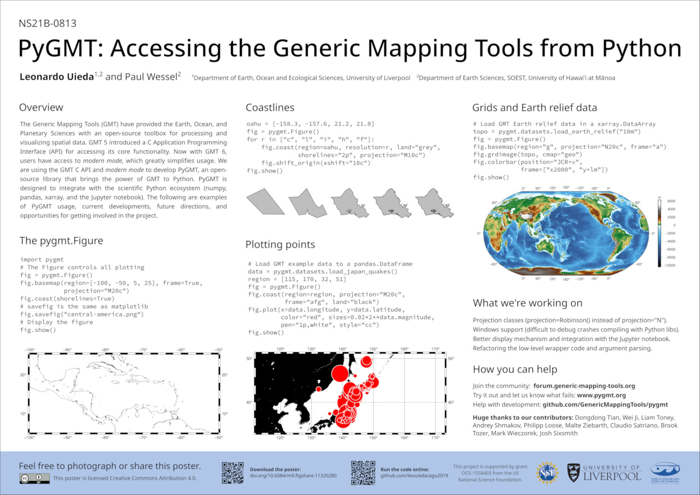
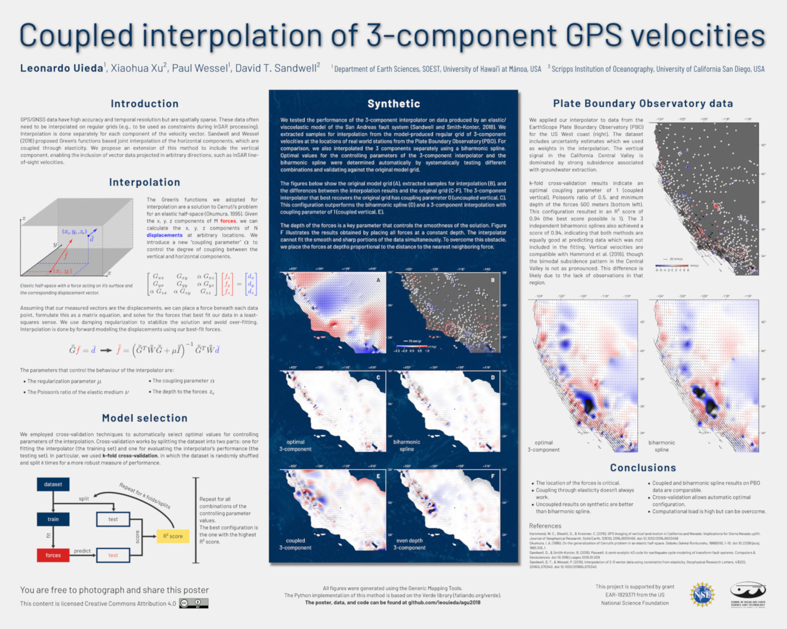
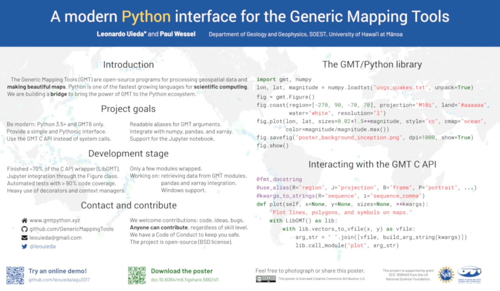
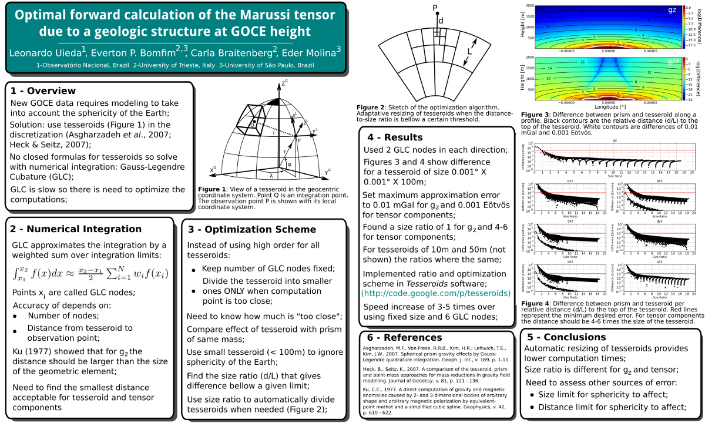

Looking for a career summary? Here is a short CV (LaTeX source at leouieda/cv).
Want to read a narrative version? I wrote an academic autobiography (in Portuguese) as part of my last job application. The LaTeX source is at leouieda/memorial.
Contents
1. Professional
1.1 Appointments
2025 - present. Professor Associado. Univeridade de São Paulo, Brazil.
Click for more information
Department: Departamento de Geofísica - Instituto de Astronomia, Geofísica e Ciências Atmosféricas
About: As of 19 November 2025, I have attained the degree of Dr. Habil. (Livre Docente) and have been promoted to Professor Associado. The admin roles listed below continue on from my previous appointment.
Roles:
- 03/2025 - present. Representante da categoria MS-3 no Conselho do Departamento de Geofísica
- 04/2024 - present. Presidente da Comissão de Cooperação Nacional e Internacional
- 12/2023 - present. Coordenador do Ciclo de Seminários do Departamento de Geofísica do IAG/USP
- 10/2023 - present. Representante Titular do IAG no Comitê Gestor do Banco Nacional de Dados Gravimétricos (BNDG)
- 10/2023 - present. Membro Titular da Comissão de Cooperação Nacional e Internacional
- 10/2023 - present. Membro Suplente da Comissão de Informática
- 04/2024 - present. Membro Suplente da Comissão da Biblioteca
- 01/2024 - 12/2025. Membro da Comissão de Qualificações do Programa de Geofísica
2023 - 2025. Professor Doutor. Univeridade de São Paulo, Brazil.
Click for more information
Department: Departamento de Geofísica - Instituto de Astronomia, Geofísica e Ciências Atmosféricas
About: In April 2023, I applied and was selected for a Professor position at my alma mater. As part of the selection process, I wrote an academic auto-biography (in Portuguese), which provided an excellent opportunity to reflect back on my career, try to find meaning in what I've accomplished, and plan where to invest my time and energy going forward. On 21 August 2023, I started this new chapter. My admin roles are listed under the latest appointment at IAG.
2019 - 2023. Lecturer in Geophysics. University of Liverpool, UK.
Click for more information
Department: Department of Earth, Ocean and Ecological Sciences - School of Environmental Sciences
About: After 2.5 years in Hawaiʻi, I was offered a position to join the Geophysics group of the University of Liverpool's Department of Earth, Ocean and Ecological Sciences on 19 August 2019. This was an exciting opportunity to start my own research group and navigate the UK system, which was entirely new to me. I spent 4 years at Liverpool, with great friends and colleagues, and had an overall good time. But I felt that the time had come to return home to Brazil, to be closer to family and also to once more be a part of a public university system that has a strong social justice agenda, like we have in Brazil.
Roles:
- 2022 - 2023. Programme Director for Geophysics
- 2022 - 2023. Admissions Tutor for Geophysics
- 2020 - 2023. Early Career Academic (ECA) Representative for Earth Sciences
- 2020 - 2022. Department committee for web presence (website, social media, etc.)
2017 - 2019. Visiting Researcher. University of Hawaiʻi at Mānoa, USA.
Click for more information
Department: Department of Earth Sciences - School of Ocean and Earth Science and Technology
About: This was a mix of a sabbatical from UERJ and a postdoc position. I took a leave of absence for 1 year to work with the Generic Mapping Tools team to create PyGMT, a widely-used Python library for processing and visualizing geophysical data. After this first year was done, I quit my job at UERJ and stayed in this role, which was funded for 2.5 years.
2014 - 2018. Professor Assistente. Universidade do Estado do Rio de Janeiro, Brazil.
Click for more information
Department: Departamento de Geologia Aplicada - Faculdade de Geologia
About: This was my first academic position, which I got while still working on my PhD thesis. It was a great opportunity to gain some experience, particularly in teaching, which turned out to be the thing I like the most about the job.
Roles:
- 2015. Chair of the Election Committee for the deans of the University and the School of Geology
- 2015 - 2017. Faculty Advisor for the Society of Exploration Geophysicists (SEG) Student Chapter
1.2 Community service
2024 - present. Embaixador. Rede Brasileira de Reprodutibilidade.
Click for more information
About: The Brazilian Reproducibility Network started an ambassador program in 2024, for which I was selected. Our roles involves helping with the RBR's activities, advising, and undertaking a project in 2025 involving open science and reproducibility at our host institutions.
2022 - present. Board Member. Software Underground.
Click for more information
About: The Software Underground is a non-profit professional society for people at the intersection of geoscience and computing. I have been active in the Software Underground community since its inception in 2014 and was very happy to join the Board in 2022.
2024 - present. Advisory Council Member. EarthArXiv.
Click for more information
About: EarthArXiv is a non-profit preprint server for the Earth Sciences. After serving a full term on their Advisory Council, I signed up for another term to help advise newer members.
2020 - present. Fellow. Software Sustainability Institute.
Click for more information
Abstract: The SSI has a yearly fellowship program to fund the organization of communities around scientific software (creating of local user groups, workshops, hackathons, etc). I was selected for the 2020 cohort of fellows and we remain fellows of the institute going forward.
2022 - 2023. Advisory Council Member. pyOpenSci.
Click for more information
About: pyOpenSci is a non-profit looking to connect, curate, and improve open-source scientific software in the Python language. I joined their Advisory Council in 2022 to help develop community norms and guidance around tooling and techniques in software engineering.
2019 - 2022. Topic Editor. Journal of Open Source Software.
Click for more information
About: JOSS is a developer friendly, diamond open-access journal for research software packages. I joined the editorial team in 2019 as Topic Editor for Geoscience. I reluctantly left the editorial team in 2022 because of the increased workload brought on by my new admin roles at the University of Liverpool.
2019 - 2022. Advisory Council Member. EarthArXiv.
Click for more information
About: EarthArXiv is a non-profit preprint server for the Earth Sciences. I joined their Advisory Council in 2019 and participated in discussions about how to setup and improve the platform, as well as in moderating submissions. I left the Council in 2022 when my 3 year term was up.
1.3 Degrees awarded
2025. Livre Docente (Dr. habil.). Universidade de São Paulo, Brazil.
Click for more information
DOI: 10.6084/m9.figshare.28791908
GitHub: leouieda/livre-docencia
Slides: https://www.leouieda.com/livre-docencia
Thesis: Modeling of magnetic field observations from continental to microscopic scale
Citations:
About: The title of "Livre Docente" is a form habilitation, which is the highest degree that can be earned after a PhD. At Universidade de São Paulo, this involves written and teaching exams and the defense of a thesis (see the DOI link) and a "memorial" (in portuguese), which is a long form narrative CV that includes reflections on our experiences. The thesis is a compilation of the work of the wonderful graduate researchers Santiago Soler, India Uppal, and Gelson Souza-Junior. My examination committee was composed of Walter Eugênio de Medeiros (UFRN), Roberta Mary Vidotti (UnB), Gelvam André Hartmann (UNICAMP), Mauricio de Souza Bologna (USP), and Carlos Alberto Mendonça (USP). Gaining this title is a requirement for promotion to "Professor Associado" at USP. It was a very exhausting experience, with two full days of exams, but also very rewarding to see all of my effort being recognized by my peers and seniors.
2020 - 2022. Fellow of the Higher Education Academy. University of Liverpool, UK.
Click for more information
DOI: 10.6084/m9.figshare.28401473
GitHub: leouieda/pgcap
Thesis: A review of peer-observation in higher education
Citations:
About: During my time as Lecturer at the University of Liverpool, UK, I took the Postgraduate Certificate in Academic Practice (PGCAP) course between November 2020 and May 2022. The course was composed of 2 modules ADEV700 2020/21 and ADEV701 2021/22 totaling about 600h of study. I build a Portfolio of Activity for the modules, which includes a review of peer-observation strategies as my research project. Completing the course granted me the title of Fellow of Higher Education Academy (reference number PR242069).
2018. Instructor. The Carpentries, USA.
Click for more information
About: I went through the in person training for certification as an instructor of Software Carpentry. The training covers various aspects of the theory and practice of teaching computing. Done at the 2018 Scipy Conference.
2011 - 2016. PhD in Geophysics. Observatório Nacional, Brazil.
Click for more information
DOI: 10.6084/m9.figshare.16883689
GitHub: leouieda/phd-thesis
Slides: https://speakerdeck.com/leouieda/phd-defense
Thesis: Forward modeling and inversion of gravitational fields in spherical coordinates
Funding agency: CAPES
Advisor: Valéria C. F. Barbosa
Citations:
About: After my Master's degree, I stayed at the Observatório Nacional for my PhD, also with Valéria C. F. Barbosa. I received the Brazilian Geophysical Society (SBGf) Best PhD Thesis of 2015-2017 award for my work.
Abstract: We present methodological improvements to forward modeling and regional inversion of satellite gravity data. For this purpose, we developed two open-source software projects. The first is a C language suite of command-line programs called Tesseroids. The programs calculate the gravitational potential, acceleration, and gradient tensor of a spherical prism, or tesseroid. Tesseroids implements and extends an adaptive discretization algorithm to automatically ensure the accuracy of the computations. Our numerical experiments show that, to achieve the same level of accuracy, the gravitational acceleration components require finner discretization than the potential. In turn, the gradient tensor requires finner discretization still than the acceleration. The second open-source project is Fatiando a Terra, a Python language library for inversion, forward modeling, data processing, and visualization. The library allows the user to combine the forward modeling and inversion tools to implement new inversion methods. The gravity forward modeling tools include an implementation of the algorithm used in the Tesseroids software. We combined the inversion and tesseroid forward modeling utilities of Fatiando a Terra to develop a new method for fast non-linear gravity inversion. The method estimates the depth of the crust-mantle interface (the Moho) based on observed gravity data using a spherical Earth approximation. We extended the computationally efficient Bott's method to include smoothness regularization and use tesseroids instead right rectangular prisms. The inversion is controlled by three hyper-parameters: the regularization parameter, the density-contrast between the real Earth and the reference model (the Normal Earth), and the depth of the Moho of the Normal Earth. We employ two cross-validation procedures to automatically estimate these parameters. Tests on synthetic data confirm the capability of the proposed method to estimate smoothly varying Moho depths and the three hyper-parameters. Finally, we applied the inversion method developed to produce a Moho depth model for South America. The estimated Moho depth model fits the gravity data and seismological Moho depth estimates in the oceanic areas and the central and eastern portions of the continent. We observe large misfits in the Andes region, where Moho depth is largest. In Amazon, Solimões, and Paraná Basins, the model fits the observed gravity but disagrees with seismological estimates. These discrepancies suggest the existence of density-anomalies in the crust or upper mantle, as has been suggested in the literature.
2010 - 2011. MSc in Geophysics. Observatório Nacional, Brazil.
Click for more information
DOI: 10.6084/m9.figshare.16882300.v1
GitHub: pinga-lab/paper-planting-densities
Slides: https://speakerdeck.com/leouieda/masters-defense
Thesis: Robust 3D gravity gradient inversion by planting anomalous densities
Funding agency: CAPES
Advisor: Valéria C. F. Barbosa
Citations:
About: I did my Master's degree in Geophysics at the Observatório Nacional in Rio de Janeiro, Brazil, under the supervision of Valéria C. F. Barbosa. I started in March 2010 and defended my dissertation in October 2011. The method that we developed is implemented in the software Fatiando a Terra. The dissertation was later published as the paper "Robust 3D gravity gradient inversion by planting anomalous densities (2012)"
Abstract: We have developed a new gravity gradient inversion method for estimating a 3D density-contrast distribution defined on a grid of rectangular prisms. Our method consists of an iterative algorithm that does not require the solution of an equation system. Instead, the solution grows systematically around user-specified prismatic elements, called "seeds", with given density contrasts. Each seed can be assigned a different density-contrast value, allowing the interpretation of multiple sources with different density contrasts and that produce interfering signals. In real world scenarios, some sources might not be targeted for the interpretation. Thus, we developed a robust procedure that neither requires the isolation of the signal of the targeted sources prior to the inversion nor requires substantial prior information about the nontargeted sources. In our iterative algorithm, the estimated sources grow by the accretion of prisms in the periphery of the current estimate. In addition, only the columns of the sensitivity matrix corresponding to the prisms in the periphery of the current estimate are needed for the computations. Therefore, the individual columns of the sensitivity matrix can be calculated on demand and deleted after an accretion takes place, greatly reducing the demand for computer memory and processing time. Tests on synthetic data show the ability of our method to correctly recover the geometry of the targeted sources, even when interfering signals produced by nontargeted sources are present. Inverting the data from an airborne gravity gradiometry survey flown over the iron ore province of Quadrilátero Ferrífero, southeastern Brazil, we estimated a compact iron ore body that is in agreement with geologic information and previous interpretations.
2008 - 2009. International Exchange. York University, Canada.
Click for more information
About: In the fourth year of my BSc degree, I went on an international exchange program to York University to study in their Geomatics Engineering degree. I spent the year learning about geodesy, gravimetry, positioning, and least-squares adjustment, all of which I still use to this day. I also had a great time in Toronto and got to make a bunch of international friends.
2004 - 2009. BSc in Geophysics. Universidade de São Paulo, Brazil.
Click for more information
DOI: 10.6084/m9.figshare.963547
GitHub: leouieda/barchelor-thesis
Slides: https://speakerdeck.com/leouieda/bachelors-defense
Thesis: Cálculo do tensor gradiente gravimétrico utilizando tesseroides
Advisor: Naomi Ussami
Citations:
About: My Bachelor's degree in Geophysics is from the Universidade de São Paulo, Brazil, where I studied from 2004 until 2009. I did an undergraduate research project and eventually my thesis under the supervision of Naomi Ussami. This was when I started development of the software Tesseroids and the research that lead to the paper which is the first part of my PhD thesis: "Tesseroids: forward modeling gravitational fields in spherical coordinates (2016)".
Abstract: The GOCE satellite mission has the objective of measuring the Earths gravitational field with an unprecedented accuracy through the measurement of the gravity gradient tensor (GGT). The data provided by this mission could be used to study large areas, where the flat Earth approximation can have its limitations. In these cases the modeling could be done with tesseroids, also called spherical prisms, in order to take the Earths curvature into account. The GGT caused by a tesseroid can be calculated with numerical integration methods, such as the Gauss-Legendre Quadrature (GLQ). In the current project, a computer program was developed for the direct calculation of the GGT using the GLQ. The accuracy of this implementation was evaluated by comparing its results with the result of analytical formulas for the special case of a spherical cap. Next, the developed program was used to calculate the differences in the GGT caused by the flat Earth approximation. These differences reach are up to 30% in the Tzz component for a 50 deg x 50 deg x 10 km model. Finally, the computer program was used to calculate the effect caused by the topographic masses on the GGT at 250 km altitude for the Paraná basin region. In regions of large topographical variations, the components of the GGT due to the topographic masses have amplitudes of the same order of magnitude as the GGT components due to density anomalies in the interior of the crust and mantle.
2. Distinctions
2.1 Grants & fellowships
2022 - 2025. Towards individual-grain paleomagnetism: Translating regional-scale geophysics to the nascent field of magnetic microscopy.
Click for more information
Authors: ; Trindade, RIF
Funding agency: Royal Society (International Exchanges 2021 Round 3)
Award: IES\R3\213141
Amount: GBP 10,500
Abstract: The magnetization that is locked in certain minerals at the time of their formation is one of the few gateways we have to the Earth's distant past. By measuring the magnetization of certain rocks we are able to determine properties about the Earth's magnetic field in the past, which provides crucial information about our planet's climate history and the movement of the plates that make up the outermost layer of the Earth. For decades, researchers have only been able to make measurements of the average magnetic field of each rock sample, which can lead to large uncertainties in our estimates or even having to discard entire samples. Recent advances in technology are allowing us to make measurements in such detail that we may soon be able to distinguish the magnetic fields of the individual minerals that make up the rock sample. This new technology opens the door to using methods normally applied to national or continental scale geophysical surveys to micrometer scale data. There is still much to be explored and refined before this can be achieved. This collaboration will bring together experts from both large scale geophysics and micrometer scale paleomagnetism to explore the possibilities and help define future directions of research.
2020 - present. A Sustainable Plan for the Future of the Generic Mapping Tools.
Click for more information
Authors: Wessel, P;
DOI: 10.6084/m9.figshare.12235727
Funding agency: National Science Foundation (NSF-EAR)
Award: 1948602
Amount: USD 757,597
Citations:
Abstract: The Generic Mapping Tools (GMT) is open source software infrastructure used in the Earth, ocean, and planetary geosciences. GMT supports other software platforms and delivers data processing and visualizations (graphs, charts, maps) that promote new discoveries and their dissemination to society. The primary goal of this project is to transition GMT to a governance structure that includes a broader and more diverse community of developers. This project will (1) recruit and train new and diverse developers, (2) build a broad and sustainable developer community, and (3) modernize, simplify, and strengthen the GMT software. The first two tasks are critical social activities while the last is technical, involving code hardening, interoperability improvements, interface modernization, documentation completion, and data upgrades. This project will provide training in cutting-edge computational software development and data analysis, along with engaging undergraduate students in scientifically challenging tasks related to the GMT project. The project will also facilitate ongoing user training and developer workshops. This project is based on a vision for the future of GMT that incorporates how governance, communications, developer recruitment and training will evolve in the next decade. The project will design and implement a sustainable model for GMT maintenance and curation, and execute a series of essential technical improvements. These improvements will address a) automated testing and verification of results, b) development of GMT-powered software libraries in other languages (Python, MATLAB, Julia) and c) the recruitment of new and enthusiastic developers so that GMT may continue to be maintained and evolve in a changing computational landscape. In addition, GMT products such as coastline maps will be revised with modern high-resolution data as well as technical documentation of how updates are produced. Finally, this project will advance GMT to a sustainable environment that results in lower maintenance, greater confidence in GMT products, and a more engaged community of users and developers.
2020 - 2023. Software Sustainability Institute Fellowship.
Click for more information
Authors:
Funding agency: Software Sustainability Institute
Award: 2020 Fellow
Amount: GBP 3,000
Abstract: The SSI has a yearly fellowship program to fund the organization of communities around scientific software (creating of local user groups, workshops, hackathons, etc). My original plan for the Fellowship was to run some Software Carpentry workshops in Liverpool and to develop lesson material for transitioning from coder to open-source software maintainer (based on our AGU workshops). Due to the COVID19 pandemic, I wasn't able to execute these plans. Instead, in 2022 I organized the Geo+Code event as part of my Fellowship.
2018 - 2020. The EarthScope/GMT Analysis and Visualization Toolbox.
Click for more information
Authors: Wessel, P; ; Smith-Konter, B
Funding agency: National Science Foundation (NSF-EAR)
Award: 1829371
Amount: USD 174,975
Abstract: Research under the EarthScope umbrella involves both data processing and display of results. The Generic Mapping Tools (GMT) is a set of scientific analysis and plotting modules that are widely used in the Earth Sciences, particularly because they allow for specialized processing and imaging suitable for the geosciences. GMT is a long-lived (~30 years) and robust NSF-funded software toolset that originated in the ocean sciences but has spread to all aspects of the geosciences and beyond. This project will add numerous enhancements to GMT, including a much simplified usage syntax called modern mode. In addition, new modules for simplifying the creation of animations, 3-D stacking and interpolation of grids, conversion of imagery for placement in Google Earth, and greatly improved interactive documentation will be built during the project. The Generic Mapping Tools (GMT) scripting has remained remarkably similar over its 30 years of existence. Because thousands of GMT classic scripts have been written, making major changes has been problematic, even if such changes would simplify its usage. The proposed modern mode will solve this dilemma as it introduces two new commands (begin and end) that starts and end a modern mode session. Hence it is not possible to accidentally enter modern mode without the use of those commands, thus allowing all existing GMT scripts to run unchanged. Once in modern mode, the required syntax will be simplified to avoid repetitive options and the user will no longer be responsible for assembling a composite PostScript file. The default output format will be PDF but more than one format may be selected, including standard raster image formats. Improved interactive documentation will be added to showcase modern mode (while maintaining the documentation for classic mode). To strengthen EarthScope science there will be new modules for 3-D grid stacking and interpolation, KML image quadtree building for Google Earth, and a new animation module that vastly simplifies the task of building scientific animations. It is anticipated that UNAVCO will assist with annual workshops aimed at EarthScope scientists using GMT in shell, MATLAB, or Python environments.
2014 - 2018. Projeto Qualitec (Nível Superior): Laboratório de Geofísica de Exploração.
Click for more information
Authors:
DOI: 10.6084/m9.figshare.22548751.v1
Funding agency: Universidade do Estado do Rio de Janeiro (UERJ)
Citations:
Abstract: This internal grant funded a full-time graduate technician for the Exploration Geophysics Lab (LAGEX) on a 4-year contract. The technician was responsible for maintaining the computer hardware we had, working on our open-source software Fatiando a Terra, and aiding in the teaching done in the lab.
2.2 Awards & honors
2025. Paraninfo of the Geophysics BSc graduating class. Universidade de São Paulo.
Click for more information
About: I was chosen as paraninfo (honors given during graduation ceremonies in Brazil) by the graduating class of the second semester of 2024 in recognition of my teaching and mentorship efforts.
2017. Best PhD Thesis of 2015 – 2017. Sociedade Brasileira de Geofísica (SBGf).
Click for more information
About: I was the winner of the first SBGf prize for best PhD thesis.
2016. Paraninfo of the Geology BSc graduating class. Universidade do Estado do Rio de Janeiro.
Click for more information
About: I was chosen as paraninfo (honors given during graduation ceremonies in Brazil) by the graduating class of 2016 in recognition of my teaching and mentorship efforts.
2011. PACE student travel grant. European Association of Geoscientists and Engineers.
Click for more information
Conference: 73rd EAGE Conference & Exhibition 2011
2011. Student travel grant - Near Surface Geophysics Section (NSGS). Society of Exploration Geophysicists.
Click for more information
Conference: SEG Annual Meeting
3. Publications
3.1 Preprints
2025. [03] Distance-dependent stray field decay in magnetically stable remanence carriers: implications for magnetic microscopy.
Click for more information
Authors: Bellon, UD; Souza-Junior, GF; Williams, W; ; Muxworthy, AR; Nagy, L; Paterson, G; Moraes, CS; Fu, R; Trindade, RIF
DOI: 10.22541/essoar.176071652.24509178/v1
Data and code archive DOI: 10.5281/zenodo.17256342
Journal: ESS Open Archive
Citations:
Citation: Bellon, U. D., Souza-Junior, G. F., Williams, W., Uieda, L., Muxworthy, A. R., Nagy, L., et al. (2025). Distance-Dependent Stray Field Decay in Magnetically Stable Remanence Carriers: Implications for Magnetic Microscopy. ESS Open Archive. doi:10.22541/essoar.176071652.24509178/v1
Abstract: Micropaleomagnetic analysis offers a path to high-precision reconstructions of ancient magnetic fields from terrestrial and space-returned samples by inverting the vertical stray field of individual particles to recover their magnetic moments through the use of magnetic microscopes. Constraining such inversions requires a detailed understanding of how domain state influences the dipolar and non-dipolar components of the stray field with distance. Here, we use micromagnetic solutions of remanent states in real, irregular sub- to near-micron magnetite particle morphologies to calculate vertical stray fields at various heights, evaluating how dipolar and non-dipolar signals can be recovered with both simple Cartesian dipole and multidipolar models in the presence and absence of noise. Our results show that single-domain and single-vortex state (SV) grains produce strong dipolar anomalies that attenuate rapidly, limiting reliable detection to observation heights below ∼1μm for 5nT noise or ∼0.5μm for 50nT noise. Larger SV or multivortex grains remain detectable to ∼5-10μm but with reduced moment fidelity. Multipolar components decay orders of magnitude faster than the dipole and are quickly lost in noise at practical distances. Dipole-only inversions yield stable, accurate results beyond ∼2μm, while multipolar fits can improve near-surface accuracy but add significant uncertainty in noisy data. Because strongly non-dipolar anomalies observed at heights ≥1-2μm may arise from large multidomain grains or from the combined response of short- and long-wave signals of clusters of particles, they should be interpreted with caution. We highlight the need to minimize sensor noise, optimize stand-off distance, and carefully interpret signals for robust micropaleomagnetic measurement.
2025. [02] Robust directional analysis of magnetic microscopy images using non-linear inversion and iterative Euler deconvolution.
Click for more information
Authors: Souza-Junior, GF; ; Trindade, RIF; Fu, R; Bellon, UD; Castro, YM
DOI: 10.31223/X5N42F
GitHub: compgeolab/micromag-interfering-sources
Data and code archive DOI: 10.5281/zenodo.15132658
Journal: EarthArXiv
Citations:
About: This is the second contribution from Gelson's PhD thesis. We improved our original method using an iterative scheme to strip the effects of larger dipoles from the signal and a non-linear inversion step. The result is that the new method is able to cope with much denser distributions of magnetic particles.
Citation: Souza-Junior, G. F., Uieda, L., Trindade, R. I. F., Fu, R. R., Bellon, U. D., and Castro, Y. M. (2025). Robust directional analysis of magnetic microscopy images using non-linear inversion and iterative Euler deconvolution. EarthArXiv. doi:10.31223/X5N42F
Abstract: Scientists often study entire samples to understand their overall properties, but this approach can miss important details. To get a clearer picture, researchers are improving methods that focus on smaller regions of a sample. In paleomagnetism, a field that studies the Earth's ancient magnetic field, magnetic microscopy allows scientists to examine tiny areas with high precision. In this study, we use magnetic microscopy data to determine the direction of magnetization in samples. To do this, we apply a mathematical method called Euler deconvolution, which helps solve complex calculations and reduce uncertainty. We also refine our results with an additional step that improves accuracy and removes unwanted signals. We tested this approach on both simulated and real data. Our results show that this new method can detect weaker magnetic sources and accurately determine the direction of magnetization. When applied to real samples, it successfully identified their original magnetic direction. This represents an important step in using magnetic microscopy for paleomagnetic research.
2019. [01] Giving software its due through community-driven review and publication.
Click for more information
Authors: Barba, LA; Bazan, J; Brown, J; Guimera, RV; Gymrek, M; Alex Hanna; Heagy, LJ; Huff, KD; Katz, DS; Madan, CR; Moerman, KM; Niemeyer, KE; Poulson, JL; Prins, P; Ram, K; Rokem, A; Smith, AM; Thiruvathukal, GK; Thyng, KM; ; Wilson, BE; Yehudi, Y
Journal: OSF Preprints
Citations:
About: This correspondence was written by the editorial board of the Journal of Open Source Software in response to the Nature Methods editorial "Giving Software its Due". It was not accepted as a comment on the editorial so we published it as a preprint instead.
Citation: Barba, L. A., Bazán, J., Brown, J., Guimera, R. V., Gymrek, M., Hanna, A., et al. (2019). Giving software its due through community-driven review and publication. OSF Preprints. doi:10.31219/osf.io/f4vx6
Abstract: A recent editorial in Nature Methods, "Giving Software its Due", described challenges related to the development of research software and highlighted, in particular, the challenge of software publication and citation. Here, we call attention to a system that we have developed that enables community-driven software review, publication, and citation: The Journal of Open Source Software (JOSS) is an open-source project and an open access journal that provides a light-weight publishing process for research software. Focused on and based in open platforms and on a community of contributors, JOSS evidently satisfies a pressing need, having already published more than 500 articles in approximately three years of existence.
3.2 Papers
2025. [20] Dual-layer gradient-boosted equivalent sources for magnetic data.
Click for more information
Authors: Uppal, I; ; Oliveira Jr, VC; Holme, R
DOI: 10.1093/gji/ggaf359
Preprint DOI (open access): 10.31223/X58B1Q
GitHub: compgeolab/eqs-magnetic-dual-layer
Data and code archive DOI: 10.5281/zenodo.15120457
Journal: Geophysical Journal International
Citations:
About: This is the first paper of India's PhD thesis. It was motivated by our desire to improve the currently available magnetic data products available for Antarctica. We realised that more sophisticated methods of interpolating and joining the different survey data were needed and that equivalent sources was likely the way forward. These results serve as the basis for further exploration into the challenging Antarctic magnetic datasets.
Citation: Uppal, I., Uieda, L., Oliveira Jr., V. C., Holme, R. (2025). Dual-Layer Gradient-Boosted Equivalent Sources for Magnetic Data. Geophysical Journal International, 243(3), ggaf359. doi:10.1093/gji/ggaf359
Abstract: Potential field data often require interpolation onto a regular grid at constant height before further analysis. A widely used approach for this is the equivalent sources technique, which has been adapted over time to improve its computational efficiency and accuracy of the predictions. However, many of these approaches still face challenges, including border effects in the predictions or reliance on a stabilising parameter. To address these limitations, we introduce the dual-layer gradient-boosted equivalent sources to: (1) use a dual-layer approach to improve the predictions of long-wavelength signals and reduce border effect; (2) use block-averaging and the gradient-boosted equivalent sources method to reduce the computational load; (3) apply Block K-Fold cross-validation to guide optimal parameter selection for the model. The proposed method was tested on both synthetic datasets and the ICEGRAV aeromagnetic dataset to evaluate the methods ability to interpolate and upward continue onto a regular grid at constant height as well as predict the amplitude of the anomalous field from total-field anomaly data. The dual-layer approach proved superior to the single-layer approach at predicting both short- and long-wavelength signals, particularly in the presence of truncated long-wavelength anomalies. The use of block-averaging and the gradient-boosting method make our dual-layer approach computationally light, being able to grid over 400,000 data points in under 2 minutes on a moderate workstation computer.
2025. [19] Efficiency of thermoremanent magnetization acquisition in vortex-state particle assemblies.
Click for more information
Authors: Bellon, UD; Williams, W; Muxworthy, AR; Souza-Junior, GF; Nagy, L; ; Trindade, RIF
DOI: 10.1029/2025GL114771
Preprint DOI (open access): 10.22541/essoar.173870862.24424739/v1
Data and code archive DOI: 10.5281/zenodo.14051069
Journal: Geophysical Research Letters
Citations:
About: This came about from discussions between myself, Ricardo, Ualisson, and Gelson about deriving the number of particles that are needed to realistically recover the bias field of the Earth. The motivation was to provide a guideline for our magnetic microscopy work so we know how many measurements are needed to get a statistically reasonable estimate of the field. Ualisson took leadership of the project and produced this great bit of research.
Citation: Bellon, U. D., Williams, W., Muxworthy, A. R., Souza-Junior, G. F., Nagy, L., Uieda, L., & Trindade, R. I. (2025). Efficiency of thermoremanent magnetization acquisition in vortex-state particle assemblies. Geophysical Research Letters, 52(8), e2025GL114771. doi:10.1029/2025GL114771
Abstract: Magmatic rocks record ambient magnetic fields during cooling, preserving them for billions of years through thermoremanent magnetization (TRM). TRM accuracy depends on particle size, shape, magnetic properties, and the number of particles available to record the field. While traditionally interpreted via Neél’s single-domain theory, most particles exist in a vortex state, where complex magnetic structures require numerical modeling. We show that in strong fields (>10 μT), a few thousand nanoscopic vortex-state particles can record TRM with less than 1% error, regardless of shape. For weaker fields, morphology plays a crucial role, with spherical and oblate particles performing best. These findings challenge assumptions about particle requirements for faithful TRM recording and highlight the influence of grain shape in paleomagnetic studies. Our results justify using smaller geological samples and magnetic microscopy to reconstruct ancient magnetic fields with precision.
2025. [18] Euler inversion: Locating sources of potential-field data through inversion of Euler's homogeneity equation.
Click for more information
Authors: ; Souza-Junior, GF; Uppal, I; Oliveira Jr, VC
DOI: 10.1093/gji/ggaf114
Preprint DOI (open access): 10.31223/X5T41M
GitHub: compgeolab/euler-inversion
Data and code archive DOI: 10.6084/m9.figshare.26384140
Journal: Geophysical Journal International
Citations:
About: The main idea for this paper came about during an potential-field methods class which Leo took in 2012 with his then PhD supervisor Prof. Valéria C. F. Barbosa. While learning about the Euler deconvolution method, which is a speciality of Valéria, Leo connected it with the geodetic network adjustment theory he had been taught by Prof. Spiros Pagiatakis during an exchange program at York University, Canada, in 2008. An initial prototype was developed in 2012 but there were still some rough edges and the project was shelved to make way for other more urgent projects at the time. Leo returned to this every few years, making slow progress, and involving Vanderlei in the planning and discussion of the theory. In 2024, co-authors Gelson, India, and Vanderlei joined Leo for a sprint to finish the method and produce this paper. The paper was submitted to Geophysical Journal International in December 2024.
Citation: Uieda, L., Souza-Junior, G. F., Uppal, I., Oliveira Jr., V. C. (2025). Euler inversion: Locating sources of potential-field data through inversion of Euler's homogeneity equation. Geophysical Journal International. doi:10.1093/gji/ggaf114.
Abstract: Earth scientists can estimate the depth of certain rocks beneath Earth's surface by measuring the small disturbances that they cause in the Earth's gravity and magnetic fields. A popular method for this is Euler deconvolution, which is widely available in geoscience software and can be run quickly on a standard computer. Unfortunately, Euler deconvolution has some shortcomings: 1) the approximate shape of the rocks must be known, for example, a sphere or a wide flat slab, represented by the structural index 2) the depth of the rocks is not well estimated when there is noise in our data, which is a common occurrence. We propose a new method, Euler inversion, which fixes some of the shortcomings of Euler deconvolution by using more adequate (and complex) mathematics. Our method is less sensitive to noise in the data and is also able to determine the approximate shape of the source (the structural index). Euler inversion is also fast to execute on a standard computer, making it a practical alternative to Euler deconvolution on an Earth scientists toolbox.
2024. [17] Full vector inversion of magnetic microscopy images using Euler deconvolution as prior information.
Click for more information
Authors: Souza-Junior, GF; ; Trindade, RIF; Carmo, J; Fu, R
DOI: 10.1029/2023GC011082
Preprint DOI (open access): 10.31223/X5QD5Z
GitHub: compgeolab/micromag-euler-dipole
Data and code archive DOI: 10.6084/m9.figshare.22672978.v3
Journal: Geochemistry, Geophysics, Geosystems
Citations:
About: The idea for this work came from combining the group's expertise in applied geophysics and paleomagnetism. This is the first contribution from Gelson F. Souza-Junior's PhD project.
Citation: Souza‐Junior, G. F., Uieda, L., Trindade, R. I. F., Carmo, J., & Fu, R. (2024). Full vector inversion of magnetic microscopy images using Euler deconvolution as prior information. Geochemistry, Geophysics, Geosystems, 25, e2023GC011082. https:// doi.org/10.1029/2023GC011082
Abstract: Very small magnetic particles in rocks and other materials can store information about what the Earth’s magnetic field was like in the past. But not all particles are good recorders of this magnetic information, and some may have recorded different overlapping directions and strengths. So it is important to measure each particle separately in order to identify and separate the good recorders from the bad ones. A device called a "quantum diamond microscope" is able to measure the magnetic field near the surface of a rock sample at microscopic scale. We propose a new method for processing data from this microscope that is able to find out the individual magnetizations of large amounts of small magnetic particles automatically. We created a computer program to execute the method, which calculates the 3D position and magnetization of each particle using the simple model of a magnetic dipole. We tested the method on simulated data, using fake magnetic particles for which we know the correct magnetization and position, and real data, both of which showed good results in most cases. The method we created has the potential to enable the widespread study of the magnetism of natural materials with more detail than before.
2021. [16] Gradient-boosted equivalent sources.
Click for more information
Authors: Soler, SR;
DOI: 10.1093/gji/ggab297
Preprint DOI (open access): 10.31223/X58G7C
GitHub: compgeolab/eql-gradient-boosted
Data and code archive DOI: 10.6084/m9.figshare.13604360
Journal: Geophysical Journal International
Citations:
About: This research was done entirely with open-source software and open data! This means that anyone should be able to fully reproduce our results using the information in the paper and the material in the associated GitHub repository. This is the final part of Santiago's PhD thesis.
Citation: Soler, S. R., & Uieda, L. (2021). Gradient-boosted equivalent sources. Geophysical Journal International, 227(3), 1768–1783. https://doi.org/10.1093/gji/ggab297
Abstract: The equivalent source technique is a powerful and widely used method for
processing gravity and magnetic data. Nevertheless, its major drawback is
the large computational cost in terms of processing time and computer
memory. We present two techniques for reducing the computational cost of
equivalent source processing: block-averaging source locations and the
gradient-boosted equivalent source algorithm. Through block-averaging,
we reduce the number of source coefficients that must be estimated
while retaining the minimum desired resolution in the final processed
data. With the gradient boosting method, we estimate the sources
coefficients in small batches along overlapping windows, allowing us to
reduce the computer memory requirements arbitrarily to conform to the
constraints of the available hardware. We show that the combination of
block-averaging and gradient-boosted equivalent sources is capable of
producing accurate interpolations through tests against synthetic data.
Moreover, we demonstrate the feasibility of our method by gridding a
gravity dataset covering Australia with over 1.7 million observations
using a modest personal computer.

2020. [15] Pooch: A friend to fetch your data files.
Click for more information
Authors: ; Soler, SR; Rampin, R; van Kemenade, H; Turk, M; Shapero, D; Banihirwe, A; Leeman, J
DOI: 10.21105/joss.01943
GitHub: fatiando/pooch
Journal: Journal of Open Source Software
Citations:
About: This paper marks the release of Pooch v0.7.1, a Python library for downloading and managing data files. Pooch is a part of the new ecosystem of packages in Fatiando a Terra. The peer-review at JOSS is open and can be found on GitHub issue openjournals/joss-reviews#1943.
Citation: Uieda, L., Soler, S., Rampin, R., van Kemenade, H., Turk, M., Shapero, D., et al. (2020). Pooch: A friend to fetch your data files. Journal of Open Source Software, 5(45), 1943. https://doi.org/10.21105/joss.01943
Abstract: Scientific software is usually created to acquire, analyze, model, and visualize data. As such, many software libraries include sample datasets in their distributions for use in documentation, tests, benchmarks, and workshops. A common approach is to include smaller datasets in the GitHub repository directly and package them with the source and binary distributions (e.g., scikit-learn and scikit-image do this). As data files increase in size, it becomes unfeasible to store them in GitHub repositories. Thus, larger datasets require writing code to download the files from a remote server to the user's computer. The same problem is faced by scientists using version control to manage their research projects. While downloading a data file over HTTPS can be done easily with modern Python libraries, it is not trivial to manage a set of files, keep them updated, and check for corruption. For example, scikit-learn, Cartopy, and PyVista all include code dedicated to this particular task. Instead of scientists and library authors recreating the same code, it would be best to have a minimalistic and easy to set up tool for fetching and maintaining data files. Pooch is a Python library that fills this gap. It manages a data registry (containing file names, SHA-256 cryptographic hashes, and download URLs) by downloading files from one or more remote servers and storing them in a local data cache. Pooch is written in pure Python and has minimal dependencies. It can be easily installed from the Python Package Index (PyPI) and conda-forge on a wide range of Python versions: 2.7 (up to Pooch 0.6.0) and from 3.5 to 3.8.
2019. [14] The Generic Mapping Tools Version 6.
Click for more information
Authors: Wessel, P; Luis, J; ; Scharroo, R; Wobbe, F; Smith, WHF; Tian, D
DOI: 10.1029/2019GC008515
GitHub: GenericMappingTools/gmt
Data and code archive DOI: 10.6084/m9.figshare.8171339
Journal: Geochemistry, Geophysics, Geosystems
Citations:
About: This paper marks the release of GMT version 6. Most of the work done for this release had the goal of reducing barriers to entry for new users. The user experience as a whole has been improved and these changes are the foundation for my work on PyGMT. The development of the new modern mode was funded by our NSF EarthScope grant.
Citation: Wessel, P., Luis, J. F., Uieda, L., Scharroo, R., Wobbe, F., Smith, W. H. F., & Tian, D. (2019). The Generic Mapping Tools Version 6. Geochemistry, Geophysics, Geosystems, 20(11), 5556–5564. https://doi.org/10.1029/2019gc008515
Abstract: The Generic Mapping Tools (GMT) software is ubiquitous in the Earth and Ocean sciences. As a cross-platform tool producing high quality maps and figures, it is used by tens of thousands of scientists around the world. The basic syntax of GMT scripts has evolved very slowly since the 1990s, despite the fact that GMT is generally perceived to have a steep learning curve with many pitfalls for beginners and experienced users alike. Reducing these pitfalls means changing the interface, which would break compatibility with thousands of existing scripts. With the latest GMT version 6, we solve this conundrum by introducing a new "modern mode" to complement the interface used in previous versions, which GMT 6 now calls "classic mode". GMT 6 defaults to classic mode and thus is a recommended upgrade for all GMT 5 users. Nonetheless, new users should take advantage of modern mode to make shorter scripts, quickly access commonly used global data sets, and take full advantage of the new tools to draw subplots, place insets, and create animations.
2019. [13] Gravitational field calculation in spherical coordinates using variable densities in depth.
Click for more information
Authors: Soler, SR; Pesce, A; Gimenez, ME;
DOI: 10.1093/gji/ggz277
Preprint DOI (open access): 10.31223/osf.io/3548g
GitHub: pinga-lab/tesseroid-variable-density
Data and code archive DOI: 10.6084/m9.figshare.8239622
Journal: Geophysical Journal International
Citations:
About: This paper builds upon my work on Tesseroids and extends the methodology to work for depth-variable densities. Santiago led this project, did most of the work and a large part of the writing of the paper. This is the first paper of his PhD thesis.
Citation: Soler, S. R., Pesce, A., Gimenez, M. E., & Uieda, L. (2019). Gravitational field calculation in spherical coordinates using variable densities in depth. Geophysical Journal International, 218(3), 2150–2164. https://doi.org/10.1093/gji/ggz27
Abstract: We present a new methodology to compute the gravitational fields generated by tesseroids (spherical prisms) whose density varies with depth according to an arbitrary continuous function. It approximates the gravitational fields through the Gauss-Legendre Quadrature along with two discretization algorithms that automatically control its accuracy by adaptively dividing the tesseroid into smaller ones. The first one is a preexisting two dimensional adaptive discretization algorithm that reduces the errors due to the distance between the tesseroid and the computation point. The second is a new density-based discretization algorithm that decreases the errors introduced by the variation of the density function with depth. The amount of divisions made by each algorithm is indirectly controlled by two parameters: the distance-size ratio and the delta ratio. We have obtained analytical solutions for a spherical shell with radially variable density and compared them to the results of the numerical model for linear, exponential, and sinusoidal density functions. These comparisons allowed us to obtain optimal values for the distance-size and delta ratios that yield an accuracy of 0.1% of the analytical solutions. The resulting optimal values of distance-size ratio for the gravitational potential and its gradient are 1 and 2.5, respectively. The density-based discretization algorithm produces no discretizations in the linear density case, but a delta ratio of 0.1 is needed for the exponential and the sinusoidal density functions. These values can be extrapolated to cover most common use cases. However, the distance-size and delta ratios can be configured by the user to increase the accuracy of the results at the expense of computational speed. Lastly, we apply this new methodology to model the Neuquén Basin, a foreland basin in Argentina with a maximum depth of over 5000 m, using an exponential density function.
2019. [12] Efficient 3D large-scale forward-modeling and inversion of gravitational fields in spherical coordinates with application to lunar mascons.
Click for more information
Authors: Zhao, G; Chen, B; ; Liu, J; Kaban, MK; Chen, L; Guo, R
DOI: 10.1029/2019JB017691
Preprint DOI (open access): 10.31223/osf.io/dzf9j
Data and code archive DOI: 10.6084/m9.figshare.7300523
Journal: Journal of Geophysical Research: Solid Earth
Citations:
About: This new collaboration that came about in an unexpected way. Leo reviewed an initial version of this paper and it ended up being rejected by the journal. After which, the authors reached out and kindly asked if he wanted to help improve the paper further. We worked on this for the better part of a year, adding the inversion and lunar mascon application.
Citation: Zhao, G., Chen, B., Uieda, L., Liu, J., Kaban, M. K., Chen, L., & Guo, R. (2019). Efficient 3‐D Large‐Scale Forward Modeling and Inversion of Gravitational Fields in Spherical Coordinates With Application to Lunar Mascons. Journal of Geophysical Research: Solid Earth, 124(4), 4157–4173. https://doi.org/10.1029/2019jb017691
Abstract: An efficient forward modeling algorithm for calculation of gravitational fields in spherical coordinates is developed for 3D large‐scale gravity inversion problems. 3D Gauss‐Legendre quadrature (GLQ) is used to calculate the gravitational fields of mass distributions discretized into tesseroids. Equivalence relations in the kernel matrix of the forward‐modeling are exploited to decrease storage and computation time. The numerical tests demonstrate that the computation time of the proposed algorithm is reduced by approximately two orders of magnitude, and the memory requirement is reduced by N'λ times compared with the traditional GLQ method, where N'λ is the number of the model elements in the longitudinal direction. These significant improvements in computational efficiency and storage make it possible to calculate and store the dense Jacobian matrix in 3D large‐scale gravity inversions. The equivalence relations can be applied to the Taylor series method or combined with the adaptive discretization to ensure high accuracy. To further illustrate the capability of the algorithm, we present a regional synthetic example. The inverted results show density distributions consistent with the actual model. The computation took about 6.3 hours and 0.88 GB of memory compared with about a dozen days and 245.86 GB for the traditional 3D GLQ method. Finally, the proposed algorithm is applied to the gravity field derived from the latest lunar gravity model GL1500E. 3D density distributions of the Imbrium and Serenitatis basins are obtained, and high‐density bodies are found at the depths 10‐60 km, likely indicating a significant uplift of the high‐density mantle beneath the two mascon basins.
2018. [11] Verde: Processing and gridding spatial data using Green's functions.
Click for more information
Authors:
DOI: 10.21105/joss.00957
GitHub: fatiando/verde
Journal: Journal of Open Source Software
Citations:
About: This paper marks the release of Verde v1.0.0, a Python library for processing and gridding spatial data. Verde is a part of the new ecosystem of packages in Fatiando a Terra. The peer-review at JOSS is open and can be found on GitHub issue openjournals/joss-reviews#957.
Citation: Uieda, L. (2018). Verde: Processing and gridding spatial data using Green's functions. Journal of Open Source Software, 3(30), 957. https://doi.org/10.21105/joss.00957
Abstract: Verde is a Python library for gridding spatial data using different
Green's functions. It differs from the radial basis functions in
scipy.interpolate by providing an API inspired by
scikit-learn. The Verde API should be familiar to scikit-learn users but
is tweaked to work with spatial data, which has Cartesian or geographic
coordinates and multiple data components instead of an X
feature matrix and y label vector. The library also includes
more specialized Green's functions, utilities for trend estimation and
data decimation (which are often required prior to gridding), and more.
Some of these interpolation and data processing methods already exist in
the Generic Mapping Tools (GMT), a command-line program popular in the
Earth Sciences. However, there are no model selection tools in GMT and it
can be difficult to separate parts of the processing that are done
internally by its modules. Verde is designed to be modular, easily
extended, and integrated into the scientific Python ecosystem. It can be
used to implement new interpolation methods by subclassing the
verde.base.BaseGridder class, requiring only the
implementation of the new Green's function. For example, it is currently
being used to develop a method for interpolation of 3-component GPS data.
2017. [10] Fast non-linear gravity inversion in spherical coordinates with application to the South American Moho.
Click for more information
Authors: ; Barbosa, VCF
DOI: 10.1093/gji/ggw390
Preprint DOI (open access): 10.31223/osf.io/9ba4m
GitHub: pinga-lab/paper-moho-inversion-tesseroids
Data and code archive DOI: 10.6084/m9.figshare.3987267
Journal: Geophysical Journal International
Citations:
About: This paper is one of the chapters of my PhD thesis. It describes a new gravity inversion method to estimate the depth of the crust-mantle interface (the Moho). The inversion builds upon my work on tesseroid modelling.
Citation: Uieda, L., & Barbosa, V. C. F. (2016). Fast nonlinear gravity inversion in spherical coordinates with application to the South American Moho. Geophysical Journal International, 208(1), 162–176. https://doi.org/10.1093/gji/ggw390
Abstract: Estimating the relief of the Moho from gravity data is a computationally
intensive non-linear inverse problem. What is more, the modeling must take the
Earths curvature into account when the study area is of regional scale or
greater. We present a regularized non-linear gravity inversion method that has
a low computational footprint and employs a spherical Earth approximation. To
achieve this, we combine the highly efficient Bott's method with smoothness
regularization and a discretization of the anomalous Moho into tesseroids
(spherical prisms). The computational efficiency of our method is attained by
harnessing the fact that all matrices involved are sparse. The inversion
results are controlled by three hyper-parameters: the regularization parameter,
the anomalous Moho density-contrast, and the reference Moho depth. We
estimate the regularization parameter using the method of hold-out
cross-validation. Additionally, we estimate the density-contrast and the
reference depth using knowledge of the Moho depth at certain points. We apply
the proposed method to estimate the Moho depth for the South American
continent using satellite gravity data and seismological data. The final Moho
model is in accordance with previous gravity-derived models and seismological
data. The misfit to the gravity and seismological data is worse in the Andes
and best in oceanic areas, central Brazil and Patagonia, and along the
Atlantic coast. Similarly to previous results, the model suggests a thinner
crust of 30-35 km under the Andean foreland basins. Discrepancies with the
seismological data are greatest in the Guyana Shield, the central Solimões
and Amazonas Basins, the Paraná Basin, and the Borborema province. These
differences suggest the existence of crustal or mantle density anomalies that
were unaccounted for during gravity data processing.

2017. [09] Step-by-step NMO correction.
Click for more information
Authors:
GitHub: pinga-lab/nmo-tutorial
Journal: The Leading Edge
Citations:
About: This is a part of The Leading Edge geophysics tutorials series. All tutorials are open-access and include open-source code examples. The text is also included on the SEG Wiki! The code and idea for this tutorial came from my Introduction to Geophysics courses at UERJ. I came across the problem of implementing NMO correction while preparing my lecture and practical exercises on this topic. This is a clear example of how learning happens both ways in a classroom.
Citation: Uieda, L. (2017), Step-by-step NMO correction, The Leading Edge, 36(2), 179-180, doi:10.1190/tle36020179.1
Abstract: Open any text book about seismic data processing and you will inevitably
find a section about the normal moveout (NMO) correction. When applied to
a common midpoint (CMP) section, the correction is supposed to turn the
hyperbola associated with a reflection into a straight horizontal line.
What most text books won't tell you is how, exactly, do you apply
this equation to the data?
Read on and I'll explain step-by-step how the algorithm for NMO
correction from Yilmaz (2001) works and how to implement it in Python.
The accompanying Jupyter notebook contains the full source code, with
documentation and tests for each function.

2016. [08] Tesseroids: forward modeling gravitational fields in spherical coordinates.
Click for more information
Authors: ; Barbosa, VCF; Braitenberg, C
GitHub: pinga-lab/paper-tesseroids
PDF download: tesseroids.pdf
Journal: Geophysics
Citations:
About: This paper describes the algorithms used in version 1.2.0 of the open-source software Tesseroids. It's also one of the chapters of my PhD thesis.
Citation: Uieda, L., Barbosa, V. C. F., & Braitenberg, C. (2016). Tesseroids: Forward-modeling gravitational fields in spherical coordinates. GEOPHYSICS, 81(5), F41–F48. https://doi.org/10.1190/geo2015-0204.1
Abstract: We present the open-source software Tesseroids, a set of command-line programs to perform the forward modeling of gravitational fields in spherical coordinates. The software is implemented in the C programming language and uses tesseroids (spherical prisms) for the discretization of the subsurface mass distribution. The gravitational fields of tesseroids are calculated numerically using the Gauss-Legendre Quadrature (GLQ). We have improved upon an adaptive discretization algorithm to guarantee the accuracy of the GLQ integration. Our implementation of adaptive discretization uses a "stack" based algorithm instead of recursion to achieve more control over execution errors and corner cases. The algorithm is controlled by a scalar value called the distance-size ratio (D) that determines the accuracy of the integration as well as the computation time. We determined optimal values of D for the gravitational potential, gravitational acceleration, and gravity gradient tensor by comparing the computed tesseroids effects with those of a homogeneous spherical shell. The values required for a maximum relative error of 0.1% of the shell effects are D = 1 for the gravitational potential, D = 1.5 for the gravitational acceleration, and D = 8 for the gravity gradients. Contrary to previous assumptions, our results show that the potential and its first and second derivatives require different values of D to achieve the same accuracy. These values were incorporated as defaults in the software.
2016. [07] How two gravity-gradient inversion methods can be used to reveal different geologic features of ore deposit — A case study from the Quadrilátero Ferrífero (Brazil).
Click for more information
Authors: Carlos, DU; ; Barbosa, VCF
DOI: 10.1016/j.jappgeo.2016.04.011
PDF download: quadrilatero-2016.pdf
Journal: Journal of Applied Geophysics
Citations:
Citation: Carlos, D. U., L. Uieda, and V. C. F. Barbosa (2016), How two gravity-gradient inversion methods can be used to reveal different geologic features of ore deposit — A case study from the Quadrilátero Ferrífero (Brazil), Journal of Applied Geophysics, doi:10.1016/j.jappgeo.2016.04.011.
Abstract: Airborne gravity gradiometry data have been recently used in mining surveys to map the 3D geometry of ore deposits. This task can be achieved by different gravity-gradient inversion methods, many of which use a voxel-based discretization of the Earth's subsurface. To produce a unique and stable solution, an inversion method introduces particular constraints. One constraining inversion introduces a depth-weighting function in the first-order Tikhonov regularization imposing a smoothing on the density-contrast distributions that are not restricted to near-surface regions. Another gravity-gradient inversion, the method of planting anomalous densities, imposes compactness and sharp boundaries on the density-contrast distributions. We used these two inversion methods to invert the airborne gravity-gradient data over the iron-ore deposit at the southern flank of the Gandarela syncline in Quadrilátero Ferrífero (Brazil). Because these methods differ from each other in the particular constraint used, the estimated 3D density-contrast distributions reveal different geologic features of ore deposit. The depth-weighting smoothing inversion reveals variable dip directions along the strike of the retrieved iron-ore body. The planting anomalous density inversion estimates a compact iron-ore mass with a single density contrast, which reveals a variable volume of the iron ore along its strike increasing towards the hinge zone of the Gandarela syncline which is the zone of maximum compression. The combination of the geologic features inferred from each estimate leads to a synergistic effect, revealing that the iron-ore deposit is strongly controlled by the Gandarela syncline.
2015. [06] Estimation of the total magnetization direction of approximately spherical bodies.
Click for more information
Authors: Oliveira Jr, VC; Sales, DP; Barbosa, VCF;
GitHub: pinga-lab/Total-magnetization-of-spherical-bodies
Data and code archive DOI: 10.5281/zenodo.16191
Journal: Nonlinear Processes in Geophysics
Citations:
About: This paper has undergone open peer-review. The original submission, reviews, and replies can be viewed at the journal website.
Citation: Oliveira Jr., V. C., D. P. Sales, V. C. F. Barbosa, and L. Uieda (2015), Estimation of the total magnetization direction of approximately spherical bodies, Nonlin. Processes Geophys., 22(2), 215-232, doi:10.5194/npg-22-215-2015.
Abstract: We have developed a fast total-field anomaly inversion to estimate the magnetization direction of multiple sources with approximately spherical shapes and known centres. Our method is an overdetermined inverse problem that can be applied to interpret multiple sources with different but homogeneous magnetization directions. It requires neither the prior computation of any transformation-like reduction to the pole nor the use of regularly spaced data on a horizontal grid. The method contains flexibility to be implemented as a linear or non-linear inverse problem, which results, respectively, in a least-squares or robust estimate of the components of the magnetization vector of the sources. Applications to synthetic data show the robustness of our method against interfering anomalies and errors in the location of the sources' centre. Besides, we show the feasibility of applying the upward continuation to interpret non-spherical sources. Applications to field data over the Goiás alkaline province (GAP), Brazil, show the good performance of our method in estimating geologically meaningful magnetization directions. The results obtained for a region of the GAP, near to the alkaline complex of Diorama, suggest the presence of non-outcropping sources marked by strong remanent magnetization with inclination and declination close to −70.35 and −19.81°, respectively. This estimated magnetization direction leads to predominantly positive reduced-to-the-pole anomalies, even for other region of the GAP, in the alkaline complex of Montes Claros de Goiás. These results show that the non-outcropping sources near to the alkaline complex of Diorama have almost the same magnetization direction of those ones in the alkaline complex of Montes Claros de Goiás, strongly suggesting that these sources have been emplaced in the crust within almost the same geological time interval.
2014. [05] Imaging iron ore from the Quadrilátero Ferrífero (Brazil) using geophysical inversion and drill hole data.
Click for more information
Authors: Carlos, DU; ; Barbosa, VCF
DOI: 10.1016/j.oregeorev.2014.02.011
PDF download: quadrilatero-2014.pdf
Journal: Ore Geology Reviews
Citations:
Citation: Carlos, D. U., L. Uieda, and V. C. F. Barbosa (2014), Imaging iron ore from the Quadrilátero Ferrífero (Brazil) using geophysical inversion and drill hole data, Ore Geology Reviews, 61, 268-285, doi:10.1016/j.oregeorev.2014.02.011
Abstract: The Quadrilátero Ferrífero in southeastern Brazil hosts one of the largest concentrations of lateritic iron ore deposits in the world. Our study area is over the southern flank of the Gandarela syncline which is one of the regional synclines of the Quadrilátero Ferrífero. The Gandarela syncline is considered the Brazilian megastructure with the highest perspectives for iron ore exploration. Most of the iron-ore deposits from the Quadrilátero Ferrífero are non-outcropping bodies hosted in the oxidized, metamorphosed and heterogeneously deformed banded iron formations. Therefore, the assessment of the 3D geometry of the iron-ore body is of the utmost importance for estimating reserves and production development planning. We carried out a quantitative interpretation of the iron-ore deposit of the southern flank of the Gandarela syncline using a 3D inversion of airborne gravity-gradient data to estimate the shape of the iron-ore mineralization. The retrieved body is characterized by a high-density zone associated with the northeast-elongated iron formation. The thickness and the width of the retrieved iron-ore body vary along its strike increasing southwestward. The presence of a large volume of iron ore in the southwest portion of the study area may be due to the hinge zone of the Gandarela syncline, which is the zone of maximum compression. Our estimated iron-ore mass reveals variable dip directions. In the southernmost, central and northernmost portions of the study area, the estimated iron body dips, respectively, inwards, vertically and outwards with respect to the syncline axis. Previous geological mapping indicated continuous mineralization. However, our result suggests a quasi-continuous iron-ore body. In the central part of the study area, the estimated iron-ore body is segmented into two parts. This breakup may be related to the northwest-trending faults, which are perpendicular to the northeast-trending axis of the Gandarela syncline. Our estimated iron-ore mass agrees reasonably well with the information provided from the lithologic logging data of drill holes. In this geophysical study, the estimated iron-ore reserves are approximately 3 billion tons.
2014. [04] Geophysical tutorial: Euler deconvolution of potential-field data.
Click for more information
Authors: ; Oliveira Jr, VC; Barbosa, VCF
GitHub: pinga-lab/paper-tle-euler-tutorial
Data and code archive DOI: 10.6084/m9.figshare.923450
Journal: The Leading Edge
Citations:
About: This article is part of the Geophysical Tutorials series in The Leading Edge, started by Matt Hall. All tutorials are open-access and include open-source code examples. The February 2016 tutorial by Matt provides an introduction to the series. The tutorial is also available at the SEG wiki where it can edited and improved.
Citation: Uieda, L., V. C. Oliveira Jr, and V. C. F. Barbosa (2014), Geophysical tutorial: Euler deconvolution of potential-field data, The Leading Edge, 33(4), 448-450, doi:10.1190/tle33040448.1
Abstract: In this tutorial we'll talk about a widely used method of interpretation for potential-field data called Euler deconvolution. Our goal is to demonstrate its usefulness and, most importantly, call attention to some pitfalls encountered in the interpretation of the results. The code and synthetic data required to reproduce our results and figures can be found in the accompanying IPython notebooks. The notebooks also expand the analysis presented here. We encourage you to download the data and try it on your software of choice. For this tutorial we'll use the implementation in the open-source Python package Fatiando a Terra.
2013. [03] Estimating the nature and the horizontal and vertical positions of 3D magnetic sources using Euler deconvolution.
Click for more information
Authors: Melo, FF; Barbosa, VCF; ; Oliveira Jr, VC; Silva, JBC
Data and code archive DOI: 10.6084/m9.figshare.649433
PDF download: euler-plateau-2013.pdf
Journal: Geophysics
Citations:
Citation: Melo, F. F., V. C. F. Barbosa, L. Uieda, V. C. Oliveira Jr, and J. B. C. Silva (2013), Estimating the nature and the horizontal and vertical positions of 3D magnetic sources using Euler deconvolution, Geophysics, 78(6), J87-J98, doi:10.1190/geo2012-0515.1
Abstract: We have developed a new method that drastically reduces the number of the source location estimates in Euler deconvolution to only one per anomaly. Our method employs the analytical estimators of the base level and of the horizontal and vertical source positions in Euler deconvolution as a function of the x- and y-coordinates of the observations. By assuming any tentative structural index (defining the geometry of the sources), our method automatically locates plateaus, on the maps of the horizontal coordinate estimates, indicating consistent estimates that are very close to the true corresponding coordinates. These plateaus are located in the neighborhood of the highest values of the anomaly and show a contrasting behavior with those estimates that form inclined planes at the anomaly borders. The plateaus are automatically located on the maps of the horizontal coordinate estimates by fitting a first-degree polynomial to these estimates in a moving-window scheme spanning all estimates. The positions where the angular coefficient estimates are closest to zero identify the plateaus of the horizontal coordinate estimates. The sample means of these horizontal coordinate estimates are the best horizontal location estimates. After mapping each plateau, our method takes as the best structural index the one that yields the minimum correlation between the total-field anomaly and the estimated base level over each plateau. By using the estimated structural index for each plateau, our approach extracts the vertical coordinate estimates over the corresponding plateau. The sample means of these estimates are the best depth location estimates in our method. When applied to synthetic data, our method yielded good results if the bodies produce weak- and mid-interfering anomalies. A test on real data over intrusions in the Goiás Alkaline Province, Brazil, retrieved sphere-like sources suggesting 3D bodies.
2013. [02] Polynomial equivalent layer.
Click for more information
Authors: Oliveira Jr, VC; Barbosa, VCF;
PDF download: polynomial-eqlayer-2013.pdf
Journal: Geophysics
Citations:
Citation: Oliveira Jr, V. C., V. C. F. Barbosa, and L. Uieda (2013), Polynomial equivalent layer, Geophysics, 78(1), G1–G13, doi:10.1190/geo2012-0196.1
Abstract: We have developed a new cost-effective method for processing large-potential-field data sets via the equivalent-layer technique. In this approach, the equivalent layer is divided into a regular grid of equivalent-source windows. Inside each window, the physical-property distribution is described by a bivariate polynomial. Hence, the physical-property distribution within the equivalent layer is assumed to be a piecewise polynomial function defined on a set of equivalent-source windows. We perform any linear transformation of a large set of data as follows. First, we estimate the polynomial coefficients of all equivalent-source windows by using a linear regularized inversion. Second, we transform the estimated polynomial coefficients of all windows into the physical-property distribution within the whole equivalent layer. Finally, we premultiply this distribution by the matrix of Green's functions associated with the desired transformation to obtain the transformed data. The regularized inversion deals with a linear system of equations with dimensions based on the total number of polynomial coefficients within all equivalent-source windows. This contrasts with the classical approach of directly estimating the physical-property distribution within the equivalent layer, which leads to a system based on the number of data. Because the number of data is much larger than the number of polynomial coefficients, the proposed polynomial representation of the physical-property distribution within an equivalent layer drastically reduces the number of parameters to be estimated. By comparing the total number of floating-point operations required to estimate an equivalent layer via our method with the classical approach, both formulated with Cholesky's decomposition, we can verify that the computation time required for building the linear system and for solving the linear inverse problem can be reduced by as many as three and four orders of magnitude, respectively. Applications to synthetic and real data show that our method performs the standard linear transformations of potential-field data accurately.
2012. [01] Robust 3D gravity gradient inversion by planting anomalous densities.
Click for more information
Authors: ; Barbosa, VCF
GitHub: pinga-lab/paper-planting-densities
Data and code archive DOI: 10.6084/m9.figshare.91574
PDF download: planting-inversion-2012.pdf
Journal: Geophysics
Citations:
About: This was my first publication in a scientific journal and the topic of my
Masters dissertation. The inversion method proposed in this paper is
implemented in the open-source Fatiando a Terra Python library as the
fatiando.gravmag.harvester module, introduced in version
0.1.
Citation: Uieda, L., and V. C. F. Barbosa (2012), Robust 3D gravity gradient inversion by planting anomalous densities, Geophysics, 77(4), G55-G66, doi:10.1190/geo2011-0388.1
Abstract: We have developed a new gravity gradient inversion method for estimating a 3D density-contrast distribution defined on a grid of rectangular prisms. Our method consists of an iterative algorithm that does not require the solution of an equation system. Instead, the solution grows systematically around user-specified prismatic elements, called “seeds,” with given density contrasts. Each seed can be assigned a different density-contrast value, allowing the interpretation of multiple sources with different density contrasts and that produce interfering signals. In real world scenarios, some sources might not be targeted for the interpretation. Thus, we developed a robust procedure that neither requires the isolation of the signal of the targeted sources prior to the inversion nor requires substantial prior information about the nontargeted sources. In our iterative algorithm, the estimated sources grow by the accretion of prisms in the periphery of the current estimate. In addition, only the columns of the sensitivity matrix corresponding to the prisms in the periphery of the current estimate are needed for the computations. Therefore, the individual columns of the sensitivity matrix can be calculated on demand and deleted after an accretion takes place, greatly reducing the demand for computer memory and processing time. Tests on synthetic data show the ability of our method to correctly recover the geometry of the targeted sources, even when interfering signals produced by nontargeted sources are present. Inverting the data from an airborne gravity gradiometry survey flown over the iron ore province of Quadrilátero Ferrífero, southeastern Brazil, we estimated a compact iron ore body that is in agreement with geologic information and previous interpretations.
3.3 Conference proceedings
2014. [10] A Single Euler Solution Per Anomaly.
Click for more information
Authors: Melo, FF; Barbosa, VCF; ; Oliveira Jr, VC; Silva, JBC
DOI: 10.3997/2214-4609.20140891
PDF download: eage-euler-2014.pdf
Conference: 76th EAGE Conference and Exhibition
Citations:
Abstract: We developed a method that drastically reduces the number of the source location estimates in Euler deconvolution to only one per anomaly. We use the analytical estimators of the Euler solutions. Our approach consists in detecting automatically the regions of the anomaly producing consistent estimates of the source horizontal coordinates. These regions form plateaus in the horizontal coordinate estimates using any structural index (defining the geometry of the sources). We identify these plateaus by fitting a first-degree polynomial to the horizontal coordinate estimates with a moving-window operator which spans these estimates. The places where the angular-coefficients estimates are closest to zero identify the plateaus of the horizontal coordinate estimates where consistent estimates of the horizontal source positions are found. The sample means of these horizontal coordinate estimates are the best estimates. The best structural index is the one that yields the minimum correlation between the total-field anomaly and the estimated base level over each plateau. By using the estimated structural index for each plateau, we extract the depth estimates over the corresponding plateau. The sample means of these estimates are the best depth estimates. Test on real data over alkaline bodies, central Brazil, retrieved sphere-like sources suggesting 3D bodies.
2013. [09] Modeling the Earth with Fatiando a Terra.
Click for more information
Authors: ; Oliveira Jr, VC; Barbosa, VCF
DOI: 10.25080/Majora-8b375195-010
GitHub: leouieda/scipy2013
Conference: Proceedings of the 12th Python in Science Conference
Citations:
Abstract: Geophysics is the science of using physical observations of the Earth to infer its inner structure. Generally, this is done with a variety of numerical modeling techniques and inverse problems. The development of new algorithms usually involves copy and pasting of code, which leads to errors and poor code reuse. Fatiando a Terra is a Python library that aims to automate common tasks and unify the modeling pipeline inside of the Python language. This allows users to replace the traditional shell scripting with more versatile and powerful Python scripting. The library can also be used as an API for developing stand-alone programs. Algorithms implemented in Fatiando a Terra can be combined to build upon existing functionality. This flexibility facilitates prototyping of new algorithms and quickly building interactive teaching exercises. In the future, we plan to continuously implement sample problems to help teach geophysics as well as classic and state-of-the-art algorithms.
2012. [08] Use of the "shape-of-anomaly" data misfit in 3D inversion by planting anomalous densities.
Click for more information
Authors: ; Barbosa, VCF
GitHub: leouieda/seg2012
PDF download: seg-2012.pdf
Conference: SEG Technical Program Expanded Abstracts
Citations:
Abstract: We present an improvement to the method of 3D gravity gradient inversion by planting anomalous densities. This method estimates a density-contrast distribution defined on a grid of right-rectangular prisms. Instead of solving large equation systems, the method uses a systematic search algorithm to grow the solution, one prism at a time, around user-specified prisms called “seeds”. These seeds have known density contrasts and the solution is constrained to be concentrated around the seeds as well as have their density contrasts. Thus, prior geologic and geophysical information are incorporated into the inverse problem through the seeds. However, this leads to a strong dependence of the solution on the correct location, density contrast, and number of seeds used. Our improvement to this method consists of using the “shape-of-anomaly” data-misfit function in conjunction with the l2-norm data-misfit function. The shape-of-anomaly function measures the different in shape between the observed and predicted data and is insensitive to differences in amplitude. Tests on synthetic and real data show that the improved method not only has an increased robustness with respect to the number of seeds and their locations, but also provides a better fit of the observed data.
2012. [07] Iron ore interpretation using gravity-gradient inversions in the Carajás, Brazil.
Click for more information
Authors: Carlos, DU; ; Li, Y; Barbosa, VCF; Braga, MA; Angeli, G; Peres, G
PDF download: seg-carlos-2012.pdf
Conference: SEG Technical Program Expanded Abstracts
Citations:
Abstract: We have interpreted the airborne gravity gradiometry data from Carajás Mineral Province (CMP), Brazil, by using two different 3D inversion methods. Both inversion methods parameterized the Earth's subsurface into prismatic cells and estimate the 3D density-contrast distribution that retrieves an image of geologic sources subject to an acceptable data misfit. The first inversion method imposes smoothness on the solution by solving a linear system that minimizes an depth weighted L2 model objective function of density-contrast distribution. The second imposes compactness on the solution by using an iterative growth algorithm solved by a systematic search algorithm that accretes mass around user-specified prisms called “seeds”. Using these two inversion methods, the interpretation of full tensor gravity gradiometry data from an iron ore deposit in the area named N1 at CMP shows the consistent geometry and the depth of iron orebody. To date, the maximum depth of the iron orebody is assumed to be 200 m based on the maximum depth attained by the deepest well drilled in this study area. However, both inversion results exhibit a source whose maximum bottom depth is greater than 200 m. These results give rise two interpretations: i) the iron orebody may present its depth to the bottom greater than the maximum depth of 200 m attained by the deepest borehole; or ii) the iron orebody may be 200 m deep and the rocks below may be jaspilite whose density is close to that of soft hematite.
2011. [06] Optimal forward calculation method of the Marussi tensor due to a geologic structure at GOCE height.
Click for more information
Authors: ; Bomfim, EP; Braitenberg, C; Molina, E
GitHub: leouieda/goce2011
PDF download: goce-2011.pdf
Conference: Proceedings of the 4th International GOCE User Workshop
Abstract: The new observations of GOCE present a challenge to develop new calculation methods that take into account the sphericity of the Earth. We address this problem by using a discretization with a series of tesseroids. There is no closed formula giving the gravitational fields of the tesseroid and numerical integration methods must be used, such as the Gauss Legendre Cubature (GLC). A problem that arises is that the computation times with the tesseroids are high. Therefore, it is important to optimize the computations while maintaining the desired accuracy. This optimization was done using an adaptive computation scheme that consists of using a fixed GLC order and recursively subdividing the tesseroids. We have obtained an optimum ratio between the size of the tesseroid and its distance from the computation point. Furthermore, we show that this size-to-distance ratio is different for the gravitational attraction than for the gravity gradient tensor.
2011. [05] 3D gravity inversion by planting anomalous densities.
Click for more information
Authors: ; Barbosa, VCF
DOI: 10.1190/sbgf2011-179
GitHub: leouieda/sbgf2011
PDF download: sbgf-2011.pdf
Conference: 12th International Congress of the Brazilian Geophysical Society
Citations:
Abstract: This paper presents a novel gravity inversion method for estimating a 3D density-contrast distribution defined on a grid of prisms. Our method consists of an iterative algorithm that does not require the solution of a large equation system. Instead, the solution grows systematically around user-specified prismatic elements called “seeds”. Each seed can have a different density contrast, allowing the interpretation of multiple bodies with different density contrasts and interfering gravitational effects. The compactness of the solution around the seeds is imposed by means of a regularizing function. The solution grows by the accretion of neighboring prisms of the current solution. The prisms for the accretion are chosen by systematically searching the set of current neighboring prisms. Therefore, this approach allows that the columns of the Jacobian matrix be calculated on demand. This is a known technique from computer science called “lazy evaluation”, which greatly reduces the demand of computer memory and processing time. Test on synthetic data and on real data collected over the ultramafic Cana Brava complex, central Brazil, confirmed the ability of our method in detecting sharp and compact bodies.
2011. [04] Robust 3D gravity gradient inversion by planting anomalous densities.
Click for more information
Authors: ; Barbosa, VCF
DOI: 10.1190/1.3628201
GitHub: leouieda/seg2011
PDF download: seg-2011.pdf
Conference: SEG Technical Program Expanded Abstracts
Citations:
Abstract: We present a new gravity gradient inversion method for estimating a 3D density‐contrast distribution defined on a grid of prisms. Our method consists of an iterative algorithm that does not require the solution of a large equation system. Instead, the solution grows systematically around user‐specified prismatic elements called “seeds”. Each seed can be assigned a different density contrast, allowing the interpretation of multiple bodies with different density contrasts and that produce interfering gravitational effects. The compactness of the solution around the seeds is imposed by means of a regularizing function. The solution grows by the accretion of neighboring prisms of the current solution. The prisms for the accretion are chosen by systematically searching the set of current neighboring prisms. Therefore, this approach allows that the columns of the Jacobian matrix be calculated on demand, which greatly reduces the demand of computer memory and processing time. Tests on synthetic data and on real data collected over an iron ore province of Quadrilátero Ferrífero, southeastern Brazil, confirmed the ability of our method in detecting sharp and compact bodies.
2011. [03] 3D gravity gradient inversion by planting density anomalies.
Click for more information
Authors: ; Barbosa, VCF
DOI: 10.3997/2214-4609.20149567
GitHub: leouieda/eage2011
PDF download: eage-2011.pdf
Conference: 73th EAGE Conference and Exhibition incorporating SPE EUROPEC
Citations:
Abstract: This paper presents a novel gravity inversion method for estimating a 3D density-contrast distribution defined on a grid of prisms. Our method consists of an iterative algorithm that does not require the solution of a large equation system. Instead, the solution grows systematically around user-specified prismatic elements called “seeds”. Each seed can have a different density contrast, allowing the interpretation of multiple bodies with different density contrasts and interfering gravitational effects. The compactness of the solution around the seeds is imposed by means of a regularizing function. The solution grows by the accretion of neighboring prisms of the current solution. The prisms for the accretion are chosen by systematically searching the set of current neighboring prisms. Therefore, this approach allows that the columns of the Jacobian matrix be calculated on demand. This is a known technique from computer science called “lazy evaluation”, which greatly reduces the demand of computer memory and processing time. Test on synthetic data and on real data collected over the ultramafic Cana Brava complex, central Brazil, confirmed the ability of our method in detecting sharp and compact bodies.
2011. [02] In-depth imaging of an iron orebody from Quadrilatero Ferrifero using 3D gravity gradient inversion.
Click for more information
Authors: Carlos, DU; ; Barbosa, VCF; Braga, MA; Gomes, AAS
DOI: 10.1190/1.3628219
PDF download: seg-carlos-2011.pdf
Conference: SEG Technical Program Expanded Abstracts
Citations:
Abstract: We have interpreted the airborne gravity gradiometry data from Quadrilátero Ferrífero, an iron ore province in southeastern Brazil. Aiming at retrieving the geometry of the iron body, we have used a fast and novel gravity inversion method for estimating a 3D density‐contrast distribution defined on a grid of prisms. This inversion approach combines robust data‐fitting with an iterative procedure that does not require the solution of a large equation system. By using a systematic search algorithm, the estimated mass grows around prismatic elements called “seeds”. The interpreter specifies the locations and the associated density contrasts of the seeds. Automatically, the inversion method fits the observations and favors compact gravity sources closest to the seeds. To produce a more robust data fitting than least‐squares fit, the inversion method minimizes the L1—norm of the residuals. Hence, it allows the presence of large residuals, so that outliers produced by non‐targeted bodies can be handled. By using 126 seeds which were assigned density contrasts of 0.5 g.cm−3 and whose locations were based on our knowledge about the QF area, we have retrieved a continuous elongated iron body that fits the observed components of the gravity gradient. Our inversion result agrees reasonably with previous geophysical interpretations. In addition, our result honors the borehole information about the iron body depth.
2011. [01] Inversão de Dados de Aerogradiometria Gravimétrica 3D-FTG Aplicada a Exploração Mineral na Região do Quadrilátero Ferrífero.
Click for more information
Authors: Carlos, DU; Barbosa, VCF; ; Braga, MA
DOI: 10.1190/sbgf2011-243
PDF download: sbgf-carlos-2011.pdf
Conference: 12th International Congress of the Brazilian Geophysical Society
Citations:
Abstract: We have interpreted the airborne gravity gradiometry data from Quadrilátero Ferrífero, an iron ore province in southeastern Brazil. Aiming at retrieving the geometry of the iron body, we have used a fast and novel gravity inversion method for estimating a 3D density-contrast distribution defined on a grid of prisms. This inversion approach combines robust data-fitting with an iterative procedure that does not require the solution of a large equation system. By using a systematic search algorithm, the estimated mass grows around prismatic elements called “seeds”. The interpreter specifies the locations and the associated density contrasts of the seeds. Automatically, the inversion method fits the observations and favors compact gravity sources closest to the seeds. To produce a more robust data fitting than least-squares fit, the inversion method minimizes the L1–norm of the residuals. Hence, it allows the presence of large residuals, so that outliers produced by non-targeted bodies can be handled. By using 126 seeds which were assigned density contrasts of 0.5 g.cm-3 and whose locations were based on our knowledge about the QF area, we have retrieved a continuous elongated iron body that fits the observed components of the gravity gradient. Our inversion result agrees reasonably with previous geophysical interpretations. In addition, our result honors the borehole information about the iron body depth.
4. Presentations
4.1 Invited talks
2021. [04] Fatiando a Terra: Open-source tools for geophysics.
Click for more information
Authors: ; Soler, SR; Pesce, A
GitHub: fatiando/2021-gsh
Slides: https://www.fatiando.org/2021-gsh/
Conference: Geophysical Society of Houston
About: This was an invited talk to the Potential Fields group of the GSH. Thank you to Andrea Balza Morales for the invitation and for organizing the seminar series. The slides were made with reveal.js using my open-source HTML talk template.
Abstract: The Fatiando a Terra project is a collection of open-source Python libraries for geophysics which cover a range of functionalities, from data download and processing to modeling and inversion. In this opportunity we will present the two libraries that are focused on potential fields: Harmonica and Boule. Boule implements reference ellipsoids (including oblate ellipsoids, spheres, and soon triaxial ellipsoids), conversions between ellipsoidal and geocentric spherical coordinates, and normal gravity calculations. The latter are performed using analytical expressions for gravity fields at any point outside of the ellipsoid. Harmonica provides tools for processing, forward modelling, and inversion of gravity and magnetic data. We will demonstrate its use to compute Bouguer gravity disturbances by forward modelling the topography with prisms, removing a 2nd order regional trend, and interpolating it onto a regular grid at a constant height using the equivalent layer technique. Both libraries are still evolving as we continue to refine their goals and scopes. We invite everyone to get involved in the development, whether it's through coding, writing documentation, or giving feedback.
2021. [03] Design useful tools that do one thing well and work together: rediscovering the UNIX philosophy while building the Fatiando a Terra project.
Click for more information
Authors: ; Li, L; Soler, SR; Pesce, A
GitHub: fatiando/agu2021
Slides: https://www.fatiando.org/agu2021
Conference: AGU Fall Meeting
About: This is an invited presentation about the past, current, and future of the Fatiando a Terra project. We will cover the current functionality, recent developments, and lessons learned along the way. The presentation is centered around a tutorial that walks you through the steps of transforming observed absolute gravity measurements into a grid of residual gravity disturbances at a constant height. The tutorial showcases some of the core utilities of all of our open-source libraries. The slides were made with reveal.js using my open-source HTML talk template.
Abstract: The Fatiando a Terra project (https://www.fatiando.org) was started in 2010 as a Python library for visualization, forward modelling, and inversion across different geophysical methods. Over the following 8 years, the project attracted new contributors and grew to include cutting-edge methods, toy examples for teaching, and helper functions for visualization. Standards around testing, documentation, and code style evolved and new tools appeared around the ecosystem (such as SimPEG, PyVista, Devito, and pyGIMLi), making some of our functionality redundant and outdated. In an attempt to better interface with the emerging ecosystem, we started a major restructuring of the code base in 2018. This presentation will cover the current available functionality and some of the lessons learned from developing, growing, and maintaining the project, including current challenges and our future plans.
2021. [02] Python-based workflows for small-to-medium sized data: what works, what doesn't, and what can be improved.
Click for more information
Authors: ; Soler, SR
GitHub: compgeolab/agu2021
Slides: https://www.compgeolab.org/agu2021
Conference: AGU Fall Meeting
About: This is an invited talk for the first part of an "Open Scince in Action" session, with 10 minute talks by panelists followed by a panel discussion. The slides were made with reveal.js using my open-source HTML talk template.
Abstract: In this presentation, we will demonstrate the workflow that we have been establishing at the Computer-Oriented Geoscience Lab for building "repro-packs" for our papers and projects. We use a combination of virtual environments, data download and caching tools, notebooks, Makefiles, and data repositories to provide others with the means to reproduce and build upon our work. We will also share some of the unsolved challenges that we have encountered and our dreams for an ideal workflow.
2017. [01] Nurturing reliable and robust open-source scientific software.
Click for more information
Authors: ; Wessel, P
GitHub: leouieda/agu2017-oss
Recording: https://www.youtube.com/watch?v=0GO4ZZ5Ry6M
Conference: AGU Fall Meeting
About: I was invited to this panel session on Open-Source Software in the Geosciences along with Kerry Key, Brian Savage, Gary D Egbert, Colin Andrew Zelt, and Lion Krischer. Many thanks to the chairs Lindsey Heagy, Anna Kelbert and Louise Pellerin for putting this together.
Abstract: Scientific results are increasingly the product of software. The reproducibility and validity of published results cannot be ensured without access to the source code of the software used to produce them. Therefore, the code itself is a fundamental part of the methodology and must be published along with the results. With such a reliance on software, it is troubling that most scientists do not receive formal training in software development. Tools such as version control, continuous integration, and automated testing are routinely used in industry to ensure the correctness and robustness of software. However, many scientist do not even know of their existence (although efforts like Software Carpentry are having an impact on this issue). Publishing the source code is only the first step in creating an open-source project. For a project to grow it must provide documentation, participation guidelines, and a welcoming environment for new contributors. Expanding the project community is often more challenging than the technical aspects of software development. Maintainers must invest time to enforce the rules of the project and to onboard new members, which can be difficult to justify in the context of the “publish or perish” mentality. This problem will continue as long as software contributions are not recognized as valid scholarship by hiring and tenure committees. Furthermore, there are still unsolved problems in providing attribution for software contributions. Many journals and metrics of academic productivity do not recognize citations to sources other than traditional publications. Thus, some authors choose to publish an article about the software and use it as a citation marker. One issue with this approach is that updating the reference to include new contributors involves writing and publishing a new article. A better approach would be to cite a permanent archive of individual versions of the source code in services such as Zenodo. However, citations to these sources are not always recognized when computing citation metrics. In summary, the widespread development of reliable and robust open-source software relies on the creation of formal training programs in software development best practices and the recognition of software as a valid form of scholarship.
4.2 Department seminars
2023. [10] Campos magnéticos, de escala microscópica a continental. Universidade de São Paulo, Brazil.
Click for more information
Authors:
GitHub: leouieda/por-dentro-geofisica-2023
Recording: https://www.youtube.com/watch?v=66J0KxmwRLM
Slides: https://www.leouieda.com/por-dentro-geofisica-2023
About: This talk was given at a seminar series called "Por Dentro da Geofísica", which is organized by the Geophysics students and aimed at a general audience. The slides were made with reveal.js using my open-source HTML talk template.
Abstract: Os campos magnético e gravitacional da Terra nos fornecem uma janela para a estrutura interna da crosta terrestre. Através dos pequenos distúrbios que observamos nesses campos, somos capazes de inferir variações na densidade e magnetização da crosta. Por sua vez, essas variações estão associadas a bacias sedimentares, recursos minerais e geotermais, fluxo de calor, espessura da crosta, entre outros. Nessa palestra, brevemente resumirei minha trajetória na geofĩsica e no estudo do campo gravitacional e magnético da Terra. Em seguida, irei descrever os temas de pesquisa que tenho abordado recentemente utilizando dados do campo magnético: 1) em escala microscópica, mesclando a geofĩsica aplicada com o paleomagnetismo através da microscopia magnética; 2) em escala continental, aprimorando as formas de estimar o fluxo de calor geotermal da Antárctica através de dados aeromagnéticos.
2021. [09] Open-science for gravimetry: tools, challenges, and opportunities. GFZ Helmholtz Centre Potsdam, Germany.
Click for more information
Authors: ; Soler, SR; Pesce, A
DOI: 10.6084/m9.figshare.14838477
GitHub: leouieda/2021-06-22-gfz
Recording: https://www.youtube.com/watch?v=z-5dvWfB_SM
Slides: https://www.leouieda.com/2021-06-22-gfz
Citations:
About: This talk is about our recent on the Boule and Harmonica libraries and how they fit into our current and future research plans. It includes a live demo of using these tools to process real ground gravity data. It was an invited talk to the geophysical modelling group at GFZ. Thank you to Angela Maria Gomez Garcia for the invitation. The slides were made with reveal.js using my open-source HTML talk template.
Abstract: The Fatiando a Terra project is a collection of open-source Python libraries for geophysics which cover a range of functionalities, from data download and processing to modeling and inversion. Many of our tools are general purpose but we also focus on gravimetry and magnetometry. Development on the projected started in 2010 and has gone through several iterations as the team matured and established best practices for maintaining software projects in the open. This talk is an overview of the history and current iteration of the project, including a short demonstration of our current capabilities for downloading and processing gravity data. We will then move on to our plans for future directions of the projects and information of how you can get involved. Finally, we will briefly discuss some of the challenges and opportunities of adopting open-science practices.
2020. [08] Geophysical research powered by open-source. Universidade de São Paulo, Brazil.
Click for more information
Authors:
GitHub: leouieda/2020-06-18-usp
Recording: https://www.youtube.com/watch?v=VqI8BX1Yg54
Slides: https://www.leouieda.com/2020-06-18-usp
About: I've given this talk at a few places in 2020 with some modifications to the slides. This is a presentation about my path through geophysics and open-source software, how it's shaped my research and teaching, what I see as the future of this area (with some tips for informing yourself on current software best practices), and some of the research we're doing at the Computer-Oriented Geoscience Lab. The slides were made with reveal.js using my open-source HTML talk template.
Abstract: I was really delighted to get an invitation to speak at my alma mater
(roughly 10 years after my graduation). The talk was also delivered
online. This was the first time delivering this talk in Portuguese, which
was a struggle since I had the words prepared in English already (slides
are still in English, though). I added the latest news of the successful
reproduction of the Ferguson COVID-19 modelling results. Funny enough,
this talk is heavily inspired on the last talk I gave there in 2015.

2020. [07] Geophysical research powered by open-source. Christian-Albrechts-Universität zu Kiel, Germany.
Click for more information
Authors:
GitHub: leouieda/2020-07-01-kiel
Slides: https://www.leouieda.com/2020-07-01-kiel
About: I've given this talk at a few places in 2020 with some modifications to the slides. This is a presentation about my path through geophysics and open-source software, how it's shaped my research and teaching, what I see as the future of this area (with some tips for informing yourself on current software best practices), and some of the research we're doing at the Computer-Oriented Geoscience Lab. The slides were made with reveal.js using my open-source HTML talk template.
Abstract: This was another online version of the talk. It was really nice to connect with the geophysicists at Kiel since Prof. Jörg Ebbing's group uses Tesseroids and was involved in the generation of the GOCE gravity gradient grids cited in the talk. They have also used the Moho inversion code and are getting involved in Fatiando. I added some bits to the end about getting involved in open-source software projects and finding online communities of practice (with a shout out to the Software Underground).
2020. [06] Geophysical research powered by open-source. Technische Universität Bergakademie Freiberg, Germany.
Click for more information
Authors:
GitHub: leouieda/2020-06-04-freiberg
Slides: https://www.leouieda.com/2020-06-04-freiberg
About: I've given this talk at a few places in 2020 with some modifications to the slides. This is a presentation about my path through geophysics and open-source software, how it's shaped my research and teaching, what I see as the future of this area (with some tips for informing yourself on current software best practices), and some of the research we're doing at the Computer-Oriented Geoscience Lab. The slides were made with reveal.js using my open-source HTML talk template.
Abstract: This is the second version of this talk and it was delivered online because of the COVID-19 pandemic. I changed it a bit to reflect current research presented at EGU2020 and focus less on the technical side of development. The online delivery was new to me but it worked out well. Even though it can be strange to talk to a screen for 50 minutes, the great questions afterwards more than made up for it.
2020. [05] Geophysical research powered by open-source. Geographic Data Science Lab, University of Liverpool, UK.
Click for more information
Authors:
GitHub: leouieda/liverpool-gdsl-2020
Slides: https://www.leouieda.com/liverpool-gdsl-2020
About: I've given this talk at a few places in 2020 with some modifications to the slides. This is a presentation about my path through geophysics and open-source software, how it's shaped my research and teaching, what I see as the future of this area (with some tips for informing yourself on current software best practices), and some of the research we're doing at the Computer-Oriented Geoscience Lab. The slides were made with reveal.js using my open-source HTML talk template.
Abstract: This is the first version of this talk, delivered at the GDSL group
seminars. It was about my path through geophysics guided by my interests
in making open-source software: how I got started with coding, the various
projects I'm developing, how that's shaped my research, and plans for the
future.
2019. [04] Building the foundations for open-source geophysics. University of Liverpool, UK.
Click for more information
Authors:
DOI: 10.6084/m9.figshare.10255832
Slides: https://doi.org/10.6084/m9.figshare.10255832
Citations:
About: I gave this talk at the Earth Sciences Research Group (ESRG) seminar series of the University of Liverpool. This was my first talk to the department and I decided to layout why I think open-source development boosts research productivity and what are the tools we use every day. I hope to help people find these tools and lead by example in the Computer-Oriented Geoscience Lab.
Abstract: In this talk, I'll go over some of my work on open-source geophysics
software (Python and GMT), how we're building communities around them,
and how this ties into my current research and efforts towards
reproducibility.

2018. [03] Machine learning lessons for geophysics. University of Hawai‘i at Mānoa, USA.
Click for more information
Authors:
DOI: 10.6084/m9.figshare.7203344
GitHub: leouieda/tgif2018
Slides: https://doi.org/10.6084/m9.figshare.7203344
Citations:
About: I gave this presentation at the TGIF Seminar series of the Department of Earth Sciences, University of Hawaii at Manoa. The topic merges my interest in machine learning, how we can borrow some techniques for geophysical inversion, and the similarities with gridding problems, like my work on GPS gridding.
Abstract: Machine learning is the new trend sweeping across the Earth Sciences. From the oil and gas industry to oceanography, these algorithms are being trained to solve previously unsolvable (or extremely tedious) problems. But what exactly is "machine learning" and what can be done with it? In this talk, I will present a brief high-level overview of some of the core concepts and interesting applications of machine learning methods to geoscience data. I will also explore some of the best practices and techniques that can be applied to geophysical inversion and interpolation methods, including a new method for gridding 3-component GPS data.
2017. [02] Inverting gravity to map the Moho: A new method and the open source software that made it possible. University of Hawai‘i at Mānoa, USA.
Click for more information
Authors:
DOI: 10.6084/m9.figshare.4779766
GitHub: leouieda/tgif-2017
Slides: https://doi.org/10.6084/m9.figshare.4779766
Citations:
About: I gave this presentation at the Department of Geology and Geophysics TGIF Seminar series shortly after arriving at the University of Hawaii for my postdoc to work on GMT. The last interesting results that I'd had were from my PhD thesis so I thought I'd present that, though heavily edited in the interest of time.
Abstract: The inner density distribution of the Earth can be inferred from disturbances in its gravitational field. However, accomplishing this is never easy. There are many possible parameterizations for the mathematical model, which is often non-linear. To make matters worse, gravity data alone do not contain enough information to obtain a unique and stable solution. One must add independent information to constrain the solution space, often in the form of regularization. Many different methods for performing this inference have been developed and research in this field is still active. Investigating new methodologies implies developing complex software, which often must be able to deal with sparse matrices and parallelism. I’ll present the open-source Python library Fatiando a Terra. It implements many of the components required for developing inversion methods, such as forward modeling, data processing and I/O, and regularization. I’ll also show how I used this library to develop a computationally efficient method for estimating the Moho depth from gravity data using a spherical approximation of the Earth.
2016. [01] Fatiando a Terra: construindo uma base para ensino e pesquisa de geofísica. Universidade de São Paulo, Brazil.
Click for more information
Authors:
DOI: 10.6084/m9.figshare.1381870
GitHub: leouieda/iag-04-2015
Slides: https://doi.org/10.6084/m9.figshare.1381870
Citations:
About: This is a presentation I gave for the Department of Geophysics of the University of São Paulo and also at the Observatório Nacional. It's about my open-source project Fatiando a Terra and how I'm using for teaching geophysics and doing my own research on inverse problems. It was also my first invited talk and it was an honor to be back at my alma mater as a professor instead of a student.
Abstract: O Fatiando a Terra é uma biblioteca feita na linguagem Python que tem como objetivo facilitar o trabalho de pesquisadores e professores na área geofísica. Os módulos da biblioteca foram planejados para facilitar a combinação de seus componentes de diversas formas. Por exemplo, o mesmo módulo de modelagem direta pode ser usado para produzir dados sintéticos, desenvolver um método de inversão ou como parte de uma interface gráfica interativa. Além disso, as funções da biblioteca podem ser combinadas com funções desenvolvidas pelo usuário e com as muitas bibliotecas científicas da linguagem Python. O módulo de problemas inversos automatiza grande parte da implementação de um novo método de inversão. O pesquisador implementa somente o cálculo de dados preditos e da matriz de sensibilidade, ambos reutilizando os diversos módulos de modelagem direta. Com essas duas funções, o usuário pode escolher livremente entre diversos métodos de optimização e regularização para executar sua inversão. Para o ensino de geofísica, a biblioteca pode ser combinada com a interatividade de outros programas, particularmente o IPython notebook (www.ipython.org). Conceitos difíceis de serem transmitidos em aula podem ser explorados pelos alunos de forma interativa, com botões, gráficos e animações. Por exemplo, para ensinar a reflexão e refração de ondas sísmicas, o professor pode utilizar simulações numéricas da propagação de ondas para produzir animações em tempo real. Outro exemplo é permitir aos alunos explorar como o campo geomagnético interage com um corpo geológico a diferentes latitudes para produzir uma anomalia magnética de campo total. Dessa forma, os alunos ganham experiência e intuição ao interagir com os resultados. A implementação de diversos métodos geofísicos em uma única biblioteca fornece a base necessária para a rápida criação de novas metodologias e material didático interativo. A maior parte da funcionalidade atual é para gravimetria e magnetometria, embora já exista um núcleo de sísmica e sismologia que está sendo desenvolvido. O projeto necessita de usuários e desenvolvedores para crescer e abranger os demais ramos da geofísica. O projeto é software livre e contribuições de qualquer forma são bem vindas.
4.3 Conference presentations
2021. [23] Harmonica and Boule: Modern Python tools for geophysical gravimetry.
Click for more information
Authors: ; Soler, SR; Pesce, A; Perozzi, L; Wieczorek, MA
DOI: 10.5194/egusphere-egu21-8291
GitHub: fatiando/egu2021
Poster: https://github.com/fatiando/egu2021/blob/main/vpico.png
Conference: EGU General Assembly
Citations:

Abstract: Gravimetry is a routine part of the geophysicists toolset, historically used in geophysics following the geodetic definitions of gravity anomalies and their related “reductions”. Several authors have shown that the geodetic concept of a gravity anomaly does not align with goals of gravimetry in geophysics (the investigation of anomalous density distributions). Much of this confusion likely stems from the lack of widely available tools for performing the corrections needed to arrive at a geophysically meaningful gravity disturbance. For example, free-air corrections are completely unnecessary since analytical expressions for theoretical gravity at any point have existed for over a decade. Since this is not easily done in a spreadsheet or short script, modern tools for processing and modelling gravity data for geophysics are needed. These tools must be trustworthy (i.e., extensively tested) and designed with software development and geophysical best practices in mind. We present the Python libraries Harmonica and Boule, which are part of the Fatiando a Terra project. Both tools are open-source under the permissive BSD license and are developed in the open by a community of geoscientists and programmers. Harmonica provides tools for processing, forward modelling, and inversion of gravity and magnetic data. The first release of Harmonica was focused on implementing methods for processing and interpolation with the equivalent source technique, as well as forward modelling with right-rectangular prisms, point sources, and tesseroids. Current work is directed towards implementing a processing pipeline for gravity data, including topographic corrections in Cartesian and spherical coordinates, atmospheric corrections, and more. The software is still in early stages of development and design and would benefit greatly from community involvement and feedback. Boule implements reference ellipsoids (including oblate ellipsoids, spheres, and soon triaxial ellipsoids), conversions between ellipsoidal and geocentric spherical coordinates, and normal gravity calculations using analytical solutions for gravity fields at any point outside of the ellipsoid. It includes ellipsoids for the Earth as well as other planetary bodies in the solar system, like Mars, the Moon, Venus, and Mercury. This enables the calculation of gravity disturbances for Earth and planetary data without the need for free-air corrections. Boule was created out of the shared needs of Harmonica, SHTools, and pygeoid and is developed with input from developers of these projects. We welcome participation from the wider geophysical community, irrespective of programming skill level and experience, and are actively searching for interested developers and users to get involved in shaping the future of these projects.
2020. [22] Evaluating the accuracy of equivalent-source predictions using cross-validation.
Click for more information
Authors: ; Soler, SR
DOI: 10.5194/egusphere-egu2020-15729
Slides: https://doi.org/10.6084/m9.figshare.12245372.v1
Conference: EGU General Assembly
Citations:
About: Presented at EGU 2020 (online because of COVID-19), session G4.3: Acquisition and processing of gravity and magnetic field data and their integrative interpretation. Details some of the work we've been doing in Verde and Harmonica for machine-learning style interpolation with equivalent-sources. In particular, applying state-of-the-art cross-validation strategies to estimate interpolation accuracy and tune equivalent-source parameters.
Abstract: We investigate the use of cross-validation (CV) techniques to estimate the accuracy of equivalent-source (also known as equivalent-layer) models for interpolation and processing of potential-field data. Our preliminary results indicate that some common CV algorithms (e.g., random permutations and k-folds) tend to overestimate the accuracy. We have found that blocked CV methods, where the data are split along spatial blocks instead of randomly, provide more conservative and realistic accuracy estimates. Beyond evaluating an equivalent-source model's performance, cross-validation can be used to automatically determine configuration parameters, like source depth and amount of regularization, that maximize prediction accuracy and avoid over-fitting. Widely used in gravity and magnetic data processing, the equivalent-source technique consists of a linear model (usually point sources) used to predict the observed field at arbitrary locations. Upward-continuation, interpolation, gradient calculations, leveling, and reduction-to-the-pole can be performed simultaneously by using the model to make predictions (i.e., forward modelling). Likewise, the use of linear models to make predictions is the backbone of many machine learning (ML) applications. The predictive performance of ML models is usually evaluated through cross-validation, in which the data are split (usually randomly) into a training set and a validation set. Models are fit on the training set and their predictions are evaluated using the validation set using a goodness-of-fit metric, like the mean square error or the R² coefficient of determination. Many cross-validation methods exist in the literature, varying in how the data are split and how this process is repeated. Prior research from the statistical modelling of ecological data suggests that prediction accuracy is usually overestimated by traditional CV methods when the data are spatially auto-correlated. This issue can be mitigated by splitting the data along spatial blocks rather than randomly. We conducted experiments on synthetic gravity data to investigate the use of traditional and blocked CV methods in equivalent-source interpolation. We found that the overestimation problem also occurs and that more conservative accuracy estimates are obtained when applying blocked versions of random permutations and k-fold. Further studies need to be conducted to generalize these findings to upward-continuation, reduction-to-the-pole, and derivative calculation. Open-source software implementations of the equivalent-source and blocked cross-validation (in progress) methods are available in the Python libraries Harmonica and Verde, which are part of the Fatiando a Terra project.
2019. [21] PyGMT: Accessing the Generic Mapping Tools from Python.
Click for more information
Authors: ; Wessel, P
DOI: 10.6084/m9.figshare.11320280
GitHub: leouieda/agu2019
Poster: https://doi.org/10.6084/m9.figshare.11320280
Conference: AGU Fall Meeting
Citations:
About: This is an update on the progress we've made in PyGMT. There are examples of some of the new features implemented by myself and contributors, as well as the main problems we're facing and a call for volunteers. The main feedback we got during the meeting is that the API is not very intuitive for people unfamiliar with GMT (which I expect to be the majority of users). This has got me thinking of ways to move away from the direct mapping of GMT modules to PyGMT functions. Instead, we should implement something that makes sense in Python and call whatever GMT modules we need to get that done under the hood.
Abstract: For almost 30 years, the Generic Mapping Tools (GMT) have provided the Earth, Ocean, and Planetary Sciences with an open-source toolbox for processing and visualizing spatial data (bathymetry, gravity, magnetic, earthquake focal mechanisms, and more). In many fields, GMT is the de facto standard for creating high-resolution publication quality maps, figures, and animations. Since version 5, GMT has provided a C language Application Programming Interface (API) that allows other programs to access its core functionality. We are using this bridge to develop PyGMT (formerly GMT/Python), an open-source library that allows users of the Python programming language to leverage the almost thirty years of continuous GMT development. PyGMT is designed to integrate with the existing scientific Python ecosystem, including popular packages such as numpy, pandas, and xarray. PyGMT integrates seamlessly with the Jupyter notebook, allowing high-quality figures to be generated interactively both in a personal computer and in cloud computing environments compatible with Jupyter. We will present the design and usage of the software package, latest developments and updates, and lessons learned during its implementation.
2018. [20] Coupled interpolation of three-component GPS velocities.
Click for more information
Authors: ; Xu, X; Wessel, P; Sandwell, DT
DOI: 10.6084/m9.figshare.7440683
GitHub: leouieda/agu2018
Poster: https://doi.org/10.6084/m9.figshare.7440683
Conference: AGU Fall Meeting
Citations:
About: This is update on my GPS interpolation work (see the AOGS2018 presentation). The implementation is entirely based on the Verde library (there is an introduction to what it can do on the blog). This was the first test of the Verde API and I'm glad to say that it passed with flying colors. Implementing the new methods was very straight forward and all the tools in Verde made the entire data processing and model selection pipeline simple and easy.
Abstract: GPS/GNSS measurements of deformation have high accuracy and temporal resolution but are spatially sparse. Conversely, InSAR provides great spatial resolution but is limited by the satellite look angle, atmospheric noise, and the delay between repeat passes. The sparse GPS data often need to be interpolated on regular grids to be used as constraints during InSAR processing or to calculate strain rates. The interpolation is routinely done separately for each component of the velocity field using minimum curvature or specialized geostatistical algorithms. Recently, a joint interpolation of the horizontal components has been proposed. It estimates forces on a thin elastic sheet that fit the observed data and subsequently uses the estimated model to predict data on regular grids or arbitrary points. The Green’s functions for the physical model serve as a coupling between the two vector components through elasticity theory. We propose an extension of this method to 3D, using the elastic Green’s functions to couple the horizontal and vertical components. This enables the inclusion of vector data projected in arbitrary directions, such as InSAR line-of-sight velocities. The degree of coupling can be controlled through the Poisson’s ratio of the medium. We apply damping regularization to smooth the model and avoid instabilities in the inverse problem. Furthermore, we automatically select optimal values for the Poisson’s ratio and regularization parameter through cross-validation, which is common in machine learning applications. We compare the performance of the coupled model with uncoupled alternatives to grid 2- and 3-component GPS velocities and calculate derivatives through finite-differences approximations. We will present preliminary results from applications to GPS data from the Himalayas and the calibration of InSAR data products. A future goal is to integrate InSAR line-of-sight velocities in a joint interpolation with GPS velocities.
2018. [19] Building an object-oriented Python interface for the Generic Mapping Tools.
Click for more information
Authors: ; Wessel, P
DOI: 10.6084/m9.figshare.6814052
GitHub: leouieda/scipy2018
Recording: https://www.youtube.com/watch?v=6wMtfZXfTRM
Slides: https://doi.org/10.6084/m9.figshare.6814052
Conference: SciPy 2018
Citations:
About: This was the second talk I gave at SciPy about GMT/Python, a wrapper that I'm building for the Generic Mapping Tools. It showed the progress that we made in the past year, what our struggles and successes were, and our plans for the future.
Abstract: We are building a Python wrapper for the Generic Mapping Tools (GMT), a set of command-line programs used across the Earth, Atmospheric, and Ocean Sciences to process and visualize geographic data. At SciPy 2017, we presented the project goals and an initial prototype. The feedback received led to improvements in the design of the library, mainly the creation of an object-oriented API. We will present the newest developments including support for numpy arrays and pandas Dataframes, interactive visualization in the Jupyter notebook using NASA WorldWind, and more. Once again, we seek feedback from the community to guide us moving forward.
2018. [18] Joint interpolation of 3-component GPS velocities constrained by elasticity.
Click for more information
Authors: ; Sandwell, DT; Wessel, P
DOI: 10.6084/m9.figshare.6387467
GitHub: leouieda/aogs2018-gps
Slides: https://doi.org/10.6084/m9.figshare.6387467
Conference: AOGS 15th Annual Meeting
Citations:
About: This talk is about some early results from a collaboration me and Paul have with David Sandwell. The project was started by Paul and Dave as a follow up to their 2016 paper about interpolating 2D vector data. We're expanding it into 3D and ironing out some kinks in the methodology. I picked it up at the beginning of the year and have been slowly trying things out. It was a great chance to play with some tools from machine learning since this is a supervised prediction problem. Unlike most geophysical inversion, we're not really interested in the estimated parameters themselves. They are only a means to predict new values (on a regular grid in the case of gridding). I started implementing the tools I would need in a Python library called Verde, which served as the basis for the results shown in the presentation.
Abstract: Vertical ground motion at fault systems can be difficult to detect due to their small amplitude and contamination from non-tectonic sources, such as ground water loading. However, it may play an important role in our understanding of the earthquake cycle and the associated seismic hazards. Ground motion measurements from GPS are often sparse and must be interpolated onto a regular grid (e.g., for computing strain rate), ideally taking into account the varying degrees of uncertainty of the data. Traditionally, each vector component is interpolated separately using minimum curvature or biharmonic spline methods. Recently, a joint interpolation of the two horizontal components has been developed using the Green's functions for a point force deforming a thin elastic sheet. The elasticity constraints provide a coupling between the two vector components and lead to improved results because the underlying physics of the method approximately matches that of the GPS observations. We propose an expansion of this method into 3D in order to incorporate vertical GPS velocity measurements. To smooth the model and avoid singularities, we formulate the interpolation as a weighted least-squares inverse problem with damping regularization. Optimal values of the regularization parameter and the Poisson's ratio of the elastic medium are determined through K-fold cross-validation, a technique often used in machine learning for model selection. Additionally, the cross-validation provides a measure of the accuracy of model predictions and eliminates the need for manual configuration. The computational load of the inversion is lessened by imposing a cutoff distance to the Green's functions computations, which makes the sensitivity matrix sparse. We will present preliminary results from an application to EarthScope GPS data from the San Andreas Fault system. In the future, we aim to develop a joint inversion of 3D GPS and InSAR line-of-sight velocities to improve data coverage.
2018. [17] Integrating the Generic Mapping Tools with the Scientific Python ecosystem.
Click for more information
Authors: ; Wessel, P
DOI: 10.6084/m9.figshare.6399944
GitHub: leouieda/aogs2018-gmtpython
Poster: https://doi.org/10.6084/m9.figshare.6399944
Conference: AOGS 15th Annual Meeting
Citations:
About: This is the third presentation I gave about my work on
GMT/Python. This is by far the nicest
poster I have ever designed.
It showcases the new support for gmt.Figure.grdimage, the
built-in Earth relief datasets in GMT6, and plotting vectors with
gmt.Figure.plot. I wanted to have a more sophisticated
showcase of grdimage but I ran into some bugs before the
conference and wasn't able to finish it in time. Still, I'm amazed at how
few lines of code are required to make the figure in the poster. The more
I get to know GMT, the more I'm impressed by how much thought and
attention was, and still is, poured into it.
Abstract: The Generic Mapping Tools (GMT) are used throughout the geosciences to processes spatial data and create publication quality data visualizations, such as contour maps, earthquake focal mechanism solutions, and animations. The software is programmed in the C language and is accessed through a command-line interface. Recent versions of GMT also provide an Application Programming Interface (API) that allows access to the core functionality from other programming languages, potentially expanding the reach of GMT far beyond the current user base. A GMT toolbox for Matlab using the API has already been released, and an experimental interface from the Julia language is being developed. We are building a software library to interface GMT with the Python programming language. Popularity of Python has grown steadily in the Earth Sciences due to its simplicity and powerful set of scientific libraries. However, there is still great need for the geospatial processing and mapping capabilities of GMT. The GMT/Python library integrates with the scientific Python ecosystem through the support of common Python data types: numpy "ndarrays" and Pandas "DataFrames" for tabular data and xarray "Datasets" for grids. We have also implemented support for the Jupyter notebooks, a web-based interactive computing environment. These features will help make GMT more accessible to students and professional geoscientists who lack an extensive background in Unix tools and shell scripting. GMT/Python is an open-source project in early stages of development. The current focus is on the implementation of a robust set of core routines that implement the bridge between Python and GMT. Later, we will expand the library to cover the entire functionality of GMT. A first release is predicted for the late 2018. The latest documentation and source code can be accessed through the website www.pygmt.org.
2017. [16] A modern Python interface for the Generic Mapping Tools.
Click for more information
Authors: ; Wessel, P
DOI: 10.6084/m9.figshare.5662411
GitHub: leouieda/agu2017
Poster: https://doi.org/10.6084/m9.figshare.5662411
Conference: AGU Fall Meeting
Citations:
About: This is the second conference presentation about my work on GMT/Python. The first was my talk at SciPy 2017. I mostly made progress establishing the basis for the software: documentation build, CIs, and the code to talk to the C API. I hadn't presented a poster in 3 years and I really enjoyed designing this one. The background image was generated using GMT/Python (see the code in the poster). It's a clean design and I like how it turned out.
Abstract: Figures generated by The Generic Mapping Tools (GMT) are present in countless publications across the Earth sciences. The command-line interface of GMT lends the tool its flexibility but also creates a barrier to entry for beginners. Meanwhile, adoption of the Python programming language has grown across the scientific community. This growth is largely due to the simplicity and low barrier to entry of the language and its ecosystem of tools. Thus, it is not surprising that there have been at least three attempts to create Python interfaces for GMT: gmtpy, pygmt, and PyGMT. None of these projects are currently active and, with the exception of pygmt, they do not use the GMT Application Programming Interface (API) introduced in GMT 5. The two main Python libraries for plotting data on maps are the matplotlib Basemap toolkit (matplotlib.org/basemap) and Cartopy (scitools.org.uk/cartopy), both of which rely on matplotlib (matplotlib.org) as the backend for generating the figures. Basemap is known to have limitations and is being discontinued. Cartopy is an improvement over Basemap but is still bound by the speed and memory constraints of matplotlib. We present a new Python interface for GMT (GMT/Python) that makes use of the GMT API and of new features being developed for the upcoming GMT 6 release. The GMT/Python library is designed according to the norms and styles of the Python community. The library integrates with the scientific Python ecosystem by using the “virtual files” from the GMT API to implement input and output of Python data types (numpy “ndarray” for tabular data and xarray “Dataset” for grids). Other features include an object-oriented interface for creating figures, the ability to display figures in the Jupyter notebook, and descriptive aliases for GMT arguments (e.g., “region” instead of “R” and “projection” instead of “J”). GMT/Python can also serve as a backend for developing new high-level interfaces, which can help make GMT more accessible to beginners and more intuitive for Python users. GMT/Python is an open-source project hosted on GitHub and is in early stages of development. A first release will accompany the release of GMT 6, which is expected for early 2018.
2017. [15] Bringing the Generic Mapping Tools to Python.
Click for more information
Authors: ; Wessel, P
DOI: 10.6084/m9.figshare.7635833
GitHub: GenericMappingTools/scipy2017
Recording: https://www.youtube.com/watch?v=93M4How7R24
Slides: https://doi.org/10.6084/m9.figshare.7635833
Conference: SciPy 2017
Citations:
About: This was the first talk I gave about GMT/Python, a wrapper that I'm building for the Generic Mapping Tools. I didn't have that much implemented yet but was able to give a quick demo.
Abstract: The Generic Mapping Tools (GMT) is an open-source software package widely used in the geosciences to process and visualize time series and gridded data. Maps generated by GMT are ubiquitous in scientific publications in areas such as seismology and oceanography. We present a new GMT Python wrapper library built by the GMT team. We will show the design plans, internal implementations, and demonstrate an initial prototype of the library. Our wrapper connects to the GMT C API using ctypes and allows input and output using data from numpy ndarrays and xarray Datasets. The library is still in early stages of design and implementation and we are eager for contributions and feedback from the SciPy community.
2014. [14] Using Fatiando a Terra to solve inverse problems in geophysics.
Click for more information
Authors: ; Oliveira Jr, VC; Barbosa, VCF
DOI: 10.6084/m9.figshare.1089987
GitHub: leouieda/scipy2014
Poster: https://doi.org/10.6084/m9.figshare.1089987
Conference: SciPy 2014
Citations:
About: This was my second time at SciPy presenting about Fatiando a Terra (see my SciPy2013 talk). The poster is about some of the work me and Vanderlei had been doing on a general purpose inverse problems framework. As a bonus, I made this gif for the Twitter hashtag #scipy2014 using Fatiando to model seismic wave propagation.

Abstract: Inverse problems haunt the nightmares of geophysics graduate students. I'll demonstrate how to conquer them using Fatiando a Terra. The new machinery in Fatiando contains many ready-to-use components and automates as much of the process as possible. You can go from zero to regularized gravity inversion with as little as 30 lines of code. I'll walk through an example to show you how.
2014. [13] Gravity inversion in spherical coordinates using tesseroids.
Click for more information
Authors: ; Barbosa, VCF
DOI: 10.6084/m9.figshare.1155457
GitHub: leouieda/egu2014
Slides: https://doi.org/10.6084/m9.figshare.1155457
Conference: EGU General Assembly
Citations:
Abstract: Satellite observations of the gravity field have provided geophysicists with exceptionally dense and uniform coverage of data over vast areas. This enables regional or global scale high resolution geophysical investigations. Techniques like forward modeling and inversion of gravity anomalies are routinely used to investigate large geologic structures, such as large igneous provinces, suture zones, intracratonic basins, and the Moho. Accurately modeling such large structures requires taking the sphericity of the Earth into account. A reasonable approximation is to assume a spherical Earth and use spherical coordinates. In recent years, efforts have been made to advance forward modeling in spherical coordinates using tesseroids, particularly with respect to speed and accuracy. Conversely, traditional space domain inverse modeling methods have not yet been adapted to use spherical coordinates and tesseroids. In the literature there are a range of inversion methods that have been developed for Cartesian coordinates and right rectangular prisms. These include methods for estimating the relief of an interface, like the Moho or the basement of a sedimentary basin. Another category includes methods to estimate the density distribution in a medium. The latter apply many algorithms to solve the inverse problem, ranging from analytic solutions to random search methods as well as systematic search methods. We present an adaptation for tesseroids of the systematic search method of "planting anomalous densities". This method can be used to estimate the geometry of geologic structures. As prior information, it requires knowledge of the approximate densities and positions of the structures. The main advantage of this method is its computational efficiency, requiring little computer memory and processing time. We demonstrate the shortcomings and capabilities of this approach using applications to synthetic and field data. Performing the inversion of gravity and gravity gradient data, simultaneously or separately, is straight forward and requires no changes to the existing algorithm. Such feature makes it ideal for inverting the multicomponent gravity gradient data from the GOCE satellite.
2013. [12] Modeling the Earth with Fatiando a Terra.
Click for more information
Authors: ; Oliveira Jr, VC; Barbosa, VCF
DOI: 10.25080/Majora-8b375195-010
GitHub: leouieda/scipy2013
Recording: https://www.youtube.com/watch?v=Ec38h1oB8cc
Slides: http://www.leouieda.com/scipy2013/?theme=night#/
Conference: SciPy 2013
Citations:
About: This was the first presentation that I made about Fatiando a Terra, a Python library for modeling and inversion in geophysics. The proceedings paper that accompanies this talk became the second chapter of my PhD thesis.
Abstract: Solid Earth geophysics is the science of using physical observations of the Earth to infer its inner structure. Generally, this is done with a variety of numerical modeling techniques and inverse problems. The development of new algorithms usually involves copy and pasting of code, which leads to errors and poor code reuse. Added to this is a modeling pipeline composed of various tools that don't communicate with each other (Fortran/C for computations, large complicated I/O files, Matlab/VTK for visualization, etc). Fatiando a Terra is a Python library that aims to unify the modeling pipeline inside of the Python language. This allows users to replace the traditional shell scripting with more versatile and powerful Python scripting. Together with the new IPython notebook, Fatiando a Terra can integrate all stages of the geophysical modeling process, like data pre-processing, inversion, statistical analysis, and visualization. However, the library can also be used for quickly developing stand-alone programs that can be integrated into existing pipelines. Plus, because functions inside Fatiando a Terra use a common data and mesh format, existing algorithms can be combined and new ideas can build upon existing functionality. This flexibility facilitates reproducible computations, prototyping of new algorithms, and interactive teaching exercises. Although the project has so far focused on potential field methods (gravity and magnetics), some numerical tools for other geophysical methods have been developed as well. The library already contains: fast implementations of forward modeling algorithms (using Numpy and Cython), generic inverse problem solvers, unified geometry classes (prism meshes, polygons, etc), functions to automate repetitive plotting tasks with Matplotlib (automatic griding, simple GUIs, picking, projections, etc) and Mayavi (automatic conversion of geometry classes to VTK, drawing continents, etc). In the future, we plan to continuously implement classic and state-of-the-art algorithms as well as sample problems to help teach geophysics.
2013. [11] 3D magnetic inversion by planting anomalous densities.
Click for more information
Authors: ; Barbosa, VCF
DOI: 10.6084/m9.figshare.703651
GitHub: leouieda/agu-cancun2013
Slides: http://doi.org/10.6084/m9.figshare.703651
Conference: AGU Meeting of the Americas
Citations:
About: As you may have noticed, there is an error in the title. We do not, in fact, invert magnetic data using density anomalies. This illustrates the perils of copy-pasting combined with a looming deadline. This talk presents an adaptation of the gravity-gradient inversion method I developed for my Masters degree dissertation "Robust 3D gravity gradient inversion by planting anomalous densities" to invert magnetic data.
Abstract: We present a new 3D magnetic inversion algorithm based on the computationally efficient method of planting anomalous densities. The algorithm consists of an iterative growth of the anomalous bodies around prismatic elements called "seeds". These seeds are user-specified and have known magnetizations. Thus, the seeds provide a way for the interpreter to specify the desired skeleton of the anomalous bodies. The inversion algorithm is computationally efficient due to various optimizations made possible by the iterative nature of the growth process. The control provided by the use of seeds allows one to test different hypothesis about the geometry and magnetization of targeted anomalous bodies. To demonstrate this capability, we applied our inversion method to the Morro do Engenho (ME) and A2 magnetic anomalies, central Brazil (Figure 1a). ME is an outcropping alkaline intrusion formed by dunites, peridotites and pyroxenites with known magnetization. A2 is a magnetic anomaly to the Northeast of ME and is thought to be a similar intrusion that is not outcropping. Therefore, a plausible hypothesis is that A2 has the same magnetization as ME. We tested this hypothesis by performing an inversion using a single seed for each body. Both seeds had the same magnetization. Figure 1b shows that the inversion produced residuals up to 2000 nT over A2 (i.e., a poor fit) and less than 400 nT over ME (i.e., an acceptable fit). Figure 1c shows that ME is a compact outcropping body with bottom at approximately 5 km, which is in agreement with previous interpretations. However, the estimate produced by the inversion for A2 is outcropping and is not compact. In summary, the estimate for A2 provides a poor fit to the observations and is not in accordance with the geologic information. This leads to the conclusion that A2 does not have the same magnetization as ME. These results indicate the usefulness and capabilities of the inversion method here proposed.
2012. [10] Iron ore interpretation using gravity-gradient inversions in the Carajás, Brazil.
Click for more information
Authors: Carlos, DU; ; Li, Y; Barbosa, VCF; Braga, MA; Angeli, G; Peres, G
GitHub: leouieda/seg2012
Slides: http://doi.org/10.6084/m9.figshare.156865
Conference: SEG Annual Meeting
Citations:
About: This presentation is about the work Dionisio U. Carlos did for his PhD. He used my planting inversion method on data from his research area in central Brazil. He couldn't make it to the meeting so I ended up giving the talk on his behalf.
Abstract: We have interpreted the airborne gravity gradiometry data from Carajás Mineral Province (CMP), Brazil, by using two different 3D inversion methods. Both inversion methods parameterized the Earth's subsurface into prismatic cells and estimate the 3D density-contrast distribution that retrieves an image of geologic sources subject to an acceptable data misfit. The first inversion method imposes smoothness on the solution by solving a linear system that minimizes an depth weighted L2 model objective function of density-contrast distribution. The second imposes compactness on the solution by using an iterative growth algorithm solved by a systematic search algorithm that accretes mass around user-specified prisms called “seeds”. Using these two inversion methods, the interpretation of full tensor gravity gradiometry data from an iron ore deposit in the area named N1 at CMP shows the consistent geometry and the depth of iron orebody. To date, the maximum depth of the iron orebody is assumed to be 200 m based on the maximum depth attained by the deepest well drilled in this study area. However, both inversion results exhibit a source whose maximum bottom depth is greater than 200 m. These results give rise two interpretations: i) the iron orebody may present its depth to the bottom greater than the maximum depth of 200 m attained by the deepest borehole; or ii) the iron orebody may be 200 m deep and the rocks below may be jaspilite whose density is close to that of soft hematite.
2012. [09] Use of the "shape-of-anomaly" data misfit in 3D inversion by planting anomalous densities.
Click for more information
Authors: ; Barbosa, VCF
GitHub: leouieda/seg2012
Slides: http://doi.org/10.6084/m9.figshare.156864
Conference: SEG Annual Meeting
Citations:
About: This talk is about an improvement to the method described in the paper "Robust 3D gravity gradient inversion by planting anomalous densities".
Abstract: We present an improvement to the method of 3D gravity gradient inversion by planting anomalous densities. This method estimates a density-contrast distribution defined on a grid of right-rectangular prisms. Instead of solving large equation systems, the method uses a systematic search algorithm to grow the solution, one prism at a time, around user-specified prisms called "seeds". These seeds have known density contrasts and the solution is constrained to be concentrated around the seeds as well as have their density contrasts. Thus, prior geologic and geophysical information are incorporated into the inverse problem through the seeds. However, this leads to a strong dependence of the solution on the correct location, density contrast, and number of seeds used. Our improvement to this method consists of using the "shape-of-anomaly" data-misfit function in conjunction with the l2-norm data-misfit function. The shape-of-anomaly function measures the different in shape between the observed and predicted data and is insensitive to differences in amplitude. Tests on synthetic and real data show that the improved method not only has an increased robustness with respect to the number of seeds and their locations, but also provides a better fit of the observed data.
2012. [08] Rapid 3D inversion of gravity and gravity gradient data to test geologic hypotheses.
Click for more information
Authors: ; Barbosa, VCF
DOI: 10.6084/m9.figshare.156859
GitHub: leouieda/gghs2012
Slides: http://doi.org/10.6084/m9.figshare.156859
Conference: International Symposium on Gravity, Geoid and Height Systems
Citations:
Abstract: Forward modeling of potential fields is a useful way to incorporate the interpreter's knowledge about the geology of the interpretation area into the model. However, this can be a very tedious task. This is specially true when modeling in 3D and trying to fit multiple components, e.g., in gravity gradiometry. The interpreter is required to simultaneously supervise the data fit and the construction of geologically realistic 3D bodies. This problem is partially solved by methods of geophysical inversion, which automatically fit the data. Conversely, inverse problems introduce other challenges of their own. Most geophysical inverse problems are ill-posed because their solutions are neither unique nor stable. Thus, they require the introduction of prior information, usually through regularizing functions. Moreover, 3D inverse problems are very computationally expensive. Recent developments in potential field inversion have proposed different regularizing functions to transform the ill-posed problem into a well-posed one. Also, several techniques, like data compression and parallel computation, have been applied to overcome the computational complexity. We call attention to the method of potential field inversion by planting anomalous densities. This method uses an iterative algorithm to automatically grow the anomalous bodies around user-specified prismatic elements called "seeds", which have fixed density contrasts and positions. These seeds provide a first estimate of the skeletal outlines of the presumed anomalous bodies. Then, the inversion iteratively concentrates mass around this "skeleton" in a way that both fits the observed data and yields compact bodies. Therefore, the interpreter can easily impose prior information on the inversion through the seeds. The interpreter needs only to supply a few seeds that specify the sources' skeleton, eliminating the exhaustive task of specifying the complete geometry of multiple sources. Moreover, the interpreter is liberated from the time- consuming procedure of yielding a reasonable fit to the data. Due to its high computational efficiency, the method of planting anomalous densities can be used to quickly test geologic hypothesis of different locations and density contrasts for presumed sources. To test a hypothesis, one would choose the locations and density contrasts of the seeds accordingly and verify if the inversion result is able to fit the observed data. If it is not able, then the hypothesis can be rejected and a new one can be formulated and tested. Otherwise, there is no reason to reject the hypothesis on the basis of the geophysical data. Thus, the method can be viewed as a an enhanced forward modeling. The method of planting anomalous densities can be used with both gravity and gravity gradient data. This makes it an ideal tool to interpret compact geologic bodies using the new generation GOCE data. We present applications to synthetic and real data that illustrate the usefulness of our method.
2011. [07] Robust 3D gravity gradient inversion by planting anomalous densities.
Click for more information
Authors: ; Barbosa, VCF
DOI: 10.1190/1.3628201
GitHub: leouieda/seg2011
Slides: http://doi.org/10.6084/m9.figshare.156863
Conference: SEG Annual Meeting
Citations:
About: This talk and expanded abstract present the second version of what would eventually become my first publication "Robust 3D gravity gradient inversion by planting anomalous densities" and Masters dissertation.
Abstract: We present a new gravity gradient inversion method for estimating a 3D density-contrast distribution defined on a grid of prisms. Our method consists of an iterative algorithm that does not require the solution of a large equation system. Instead, the solution grows systematically around user-specified prismatic elements called "seeds". Each seed can be assigned a different density contrast, allowing the interpretation of multiple bodies with different density contrasts and that produce interfering gravitational effects. The compactness of the solution around the seeds is imposed by means of a regularizing function. The solution grows by the accretion of neighboring prisms of the current solution. The prisms for the accretion are chosen by systematically searching the set of current neighboring prisms. Therefore, this approach allows that the columns of the Jacobian matrix be calculated on demand, which greatly reduces the demand of computer memory and processing time. Tests on synthetic data and on real data collected over an iron ore province of Quadrilátero Ferrífero, southeastern Brazil, confirmed the ability of our method in detecting sharp and compact bodies.
2011. [06] 3D gravity inversion by planting anomalous densities.
Click for more information
Authors: ; Barbosa, VCF
DOI: 10.1190/sbgf2011-179
GitHub: leouieda/sbgf2011
Slides: http://doi.org/10.6084/m9.figshare.156861
Conference: Internation Congress of the Brazilian Geophysical Society
Citations:
About: This talk and expanded abstract are a branch of my Masters degree research. It presents an adaptation of the gravity-gradient inversion to gravity data.
Abstract: This paper presents a novel gravity inversion method for estimating a 3D density-contrast distribution defined on a grid of prisms. Our method consists of an iterative algorithm that does not require the solution of a large equation system. Instead, the solution grows systematically around user-specified prismatic elements called "seeds". Each seed can have a different density contrast, allowing the interpretation of multiple bodies with different density contrasts and interfering gravitational effects. The compactness of the solution around the seeds is imposed by means of a regularizing function. The solution grows by the accretion of neighboring prisms of the current solution. The prisms for the accretion are chosen by systematically searching the set of current neighboring prisms. Therefore, this approach allows that the columns of the Jacobian matrix be calculated on demand. This is a known technique from computer science called "lazy evaluation", which greatly reduces the demand of computer memory and processing time. Test on synthetic data and on real data collected over the ultramafic Cana Brava complex, central Brazil, confirmed the ability of our method in detecting sharp and compact bodies.
2011. [05] Optimal forward calculation method of the Marussi tensor due to a geologic structure at GOCE height.
Click for more information
Authors: ; Bomfim, EP; Braitenberg, C; Molina, E
DOI: 10.6084/m9.figshare.92624
GitHub: leouieda/goce2011
Poster: http://doi.org/10.6084/m9.figshare.92624
Conference: 4th International GOCE User Workshop
Citations:
About: This poster and conference proceedings present the results and methods after the 1.0 release of Tesseroids. Version 1.0 was a complete re-write of the original Python code in the C language. This work was made possible by professor Carla Braitenberg. She funded me to spend a month at the University of Trieste, Italy, and re-write the software from scratch. What followed was a much faster and more robust program. This version also featured the first iteration of the adaptive discretization presented in the paper "Tesseroids: forward modeling gravitational fields in spherical coordinates" and my PhD thesis.
Abstract: The new observations of GOCE present a challenge to develop new calculation methods that take into account the sphericity of the Earth. We address this problem by using a discretization with a series of tesseroids. There is no closed formula giving the gravitational fields of the tesseroid and numerical integration methods must be used, such as the Gauss Legendre Cubature (GLC). A problem that arises is that the computation times with the tesseroids are high. Therefore, it is important to optimize the computations while maintaining the desired accuracy. This optimization was done using an adaptive computation scheme that consists of using a fixed GLC order and recursively subdividing the tesseroids. We have obtained an optimum ratio between the size of the tesseroid and its distance from the computation point. Furthermore, we show that this size-to-distance ratio is different for the gravitational attraction than for the gravity gradient tensor.
2011. [04] 3D gravity gradient inversion by planting density anomalies.
Click for more information
Authors: ; Barbosa, VCF
DOI: 10.3997/2214-4609.20149567
GitHub: leouieda/eage2011
Poster: http://doi.org/10.6084/m9.figshare.91511
Conference: 73th EAGE Conference and Exhibition incorporating SPE EUROPEC
Citations:
About: This poster and expanded abstract present the first version of what would be my first publication "Robust 3D gravity gradient inversion by planting anomalous densities" and eventually Masters dissertation.
Abstract: We present a new gravity gradient tensor inversion for estimating a 3D density-contrast distribution defined on a user-specified grid of prisms. Our method consists of an iterative algorithm that does not require the solution of large equation system. Instead, the solution grows systematically around user-specified prismatic elements called “seeds”. Each seed can have a different density contrast, allowing the interpretation of multiples bodies with different density contrasts. The compactness of the solution is imposed by means of a regularizing function that favors compact bodies closest to the priorly specified seeds. The solution grows by accreting neighboring prisms of the current solution. The prisms for the accretion are chosen by systematically searching the set of current neighboring prisms. Therefore, this approach allows that the columns of the Jacobian matrix be calculated on demand. This is a known technique from computer science called “lazy evaluation”, which greatly reduces the demand of computer memory and processing time. Test on synthetic data from multiple buried sources at different depths and on real data collected over iron deposits located in the Quadrilátero Ferrífero, southeastern region of Brazil, confirmed the ability of our method in detecting sharp and compact bodies.
2010. [03] Computation of the gravity gradient tensor due to topographic masses using tesseroids.
Click for more information
Authors: ; Ussami, N; Braitenberg, C
DOI: 10.6084/m9.figshare.156858
GitHub: leouieda/agu2010
Slides: http://doi.org/10.6084/m9.figshare.156858
Conference: AGU Meeting of the Americas
Citations:
About: This is a presentation of the methods behind the open-source software Tesseroids. The algorithms implemented in the software have since been updated (see the paper "Tesseroids: forward modeling gravitational fields in spherical coordinates") and have become a part of my PhD thesis. The content of this presentation is a summary of my Bachelor's degree thesis.
Abstract: The GOCE satellite mission has the objective of measuring the Earth's gravitational field with an unprecedented accuracy through the measurement of the gravity gradient tensor (GGT). One of the several applications of this new gravity data set is to study the geodynamics of the lithospheric plates, where the flat Earth approximation may not be ideal and the Earth's curvature should be taken into account. In such a case, the Earth could be modeled using tesseroids, also called spherical prisms, instead of the conventional rectangular prisms. The GGT due to a tesseroid is calculated using numerical integration methods, such as the Gauss-Legendre Quadrature (GLQ), as already proposed by Asgharzadeh et al. (2007) and Wild-Pfeiffer (2008). We present a computer program for the direct computation of the GGT caused by a tesseroid using the GLQ. The accuracy of this implementation was evaluated by comparing its results with the result of analytical formulas for the special case of a spherical cap with computation point located at one of the poles. The GGT due to the topographic masses of the Parana basin (SE Brazil) was estimated at 260km altitude in an attempt to quantify this effect on the GOCE gravity data. The digital elevation model ETOPO1 (Amante and Eakins, 2009) between 40º W and 65º W and 10º S and 35º S, which includes the Paraná Basin, was used to generate a tesseroid model of the topography with grid spacing of 10' x 10' and a constant density of 2670 kg/m3. The largest amplitude observed was on the second vertical derivative component (-0.05 to 1.20 Eötvos) in regions of rough topography, such as that along the eastern Brazilian continental margins. These results indicate that the GGT due to topographic masses may have amplitudes of the same order of magnitude as the GGT due to density anomalies within the crust and mantle.
2008. [02] Utilização de tesseróides na modelagem de dados de gradiometria gravimétrica.
Click for more information
Authors: ; Ussami, N
DOI: 10.6084/m9.figshare.4779760
GitHub: leouieda/simposio-iag-2008
Poster: http://doi.org/10.6084/m9.figshare.4779760
Conference: XIII Simpósio de Iniciação Científica do IAG-USP
Citations:
About: This is the first poster I presented about my undergraduate research on forward modeling with tesseroids (spherical prisms). This would eventually become the software Tesseroids and a part of my PhD thesis.

Abstract: A ESA (European Space Agency) planeja lançar no outono de 2008 a missão GOCE (Gravity field and steady-state Ocean Circulation Explorer). A missão foi planejada para medir o campo gravitacional da Terra com acurácia e resolução sem precedentes. Para isso, fará uso de um gradiômetro de gravidade eletrostático que consiste de três pares de acelerômetros idênticos mutuamente ortogonais. O GOCE fornecerá dados do tensor gradiente da gravidade (TGG) a uma altitude de órbita de aproximadamente 250 km. Está sendo desenvolvido um programa computacional para analisar dados do TGG sobre as bacias sedimentares brasileiras. O programa utilizará o método da Quadratura Gauss-Legendre para efetuar a modelagem direta do TGG gerado por feições ou corpos geológicos com geometria esférica. A modelagem será feita discretizando o corpo por tesseróides, também denominados prismas esféricos. Os tesseróides são segmentos de uma casca esférica de espessura finita limitados por linhas de grade geográficas. A geometria dos tesseróides possibilita a construção de modelos levando em conta a curvatura da Terra. Isto se torna importante na modelagem de corpos geológicos com grande extensão lateral, como por exemplo, a bacia do Paraná. Será criado um modelo de densidade desta bacia a partir de dados de poços e dados sísmicos e utilizaremos o programa desenvolvido para obter estimativas do TGG. As estimativas serão comparadas com os futuros dados do GOCE na tentativa de separar o componente gravimétrico associado às variações de densidade na parte mais profunda da bacia.
2006. [01] Paleomagnetismo e mineralogia magnética dos diques cambrianos de Maravilhas e Prata (PB).
Click for more information
Authors: ; D'Agrella-Filho, MS
DOI: 10.6084/m9.figshare.4779769
Poster: http://doi.org/10.6084/m9.figshare.4779769
Conference: XI Simpósio de Iniciação Científica do IAG-USP
Citations:
About: This is the first poster I ever made. It was about my first undergraduate research project at the paleomagnetism lab at the Universidade de São Paulo. The project lasted for a year and I was able to go to the field and collect samples from Cambrian dikes in Northeastern Brazil.
Abstract: I can't even find an abstract for this but I like to share it anyway. It's kind of nostalgic.
4.4 Student presentations
2025. [11] Using a dual-layer gradient-boosted equivalent sources method to grid large magnetic datasets.
Click for more information
Authors: Uppal, I; ; Oliveira Jr, VC; Holme, R
DOI: 10.5194/egusphere-egu25-455
Conference: EGU General Assembly
Citations:
Citation: Uppal, I., Uieda, L., Oliveira Jr, V. C., and Holme, R.: Using a dual-layer gradient-boosted equivalent sources method to grid large magnetic datasets., EGU General Assembly 2025, Vienna, Austria, 27 Apr–2 May 2025, EGU25-455, https://doi.org/10.5194/egusphere-egu25-455, 2025.
Abstract: Towards the construction of a new magnetic map of Antarctica, we investigate the use of gradient-boosted equivalent sources to model data from aeromagnetic surveys. Airborne surveys have larger spacing between adjacent lines compared with along-line spacing. By using the equivalent source technique, gravity and magnetic data can be interpolated onto a regular grid at constant height. This method is particularly useful to prepare the data for further use, such as modelling crustal structures and geological interpretation. The equivalent source technique uses a finite layer of sources to generate the same field as the observed data. These sources are then used to predict the field in unobserved locations. However, estimating the source coefficients that best fit the observed data is computationally demanding. To overcome this problem, the source coefficients are estimated in overlapping windows and carried out iteratively, similar to the gradient boosting method used in machine learning. At each iteration, the sources are fit to the field residuals from the previous iteration. Here we apply the gradient-boosted equivalent sources method to interpolate total-field anomaly observations and convert them to the norm of the anomalous field. We use two layers of equivalent sources at different depths to fit both the regional field and the field due to the shallower sources. We demonstrate using synthetic surveys and an Antarctic magnetic dataset that our dual-layer gradient-boosted equivalent sources are able to produce grids of both the total-field anomaly and the norm of the anomalous field accurately and with a low computational cost.
2025. [10] Mesh refinement in the 3D inversion of potential-field data through the planting method.
Click for more information
Authors: Silva, GAC;
Conference: SBGf Conference Rio’25
Link: https://sbgf.org.br/mysbgf/eventos/expanded_abstracts/19th_CISBGf/RZM0LGPM4A.pdf
Abstract: Geophysical inversions are essential for interpreting geological structures through indirect observations, like potential field data. The planting method is a computationally efficient inversion algorithm that grows a solution iteratively from “seed” elements within a discretized 3D mesh of rectangular prisms. The original software implementation has been updated and the method has been expanded to include a new mesh refinement strategy. Current results demonstrate that the mesh refinement is successful at recovering complex geometries from a single starting seed. The influence of mesh size on the inversion accuracy and the calibration of critical parameters (e.g., regularization and normalization factors) require further investigation
2025. [09] Towards an open source tool for the magnetic microscopy community.
Click for more information
Authors: Castro, YM;
Conference: SBGf Conference Rio’25
Link: https://sbgf.org.br/mysbgf/eventos/expanded_abstracts/19th_CISBGf/9YNJ950MY8.pdf
Abstract: Paleomagnetism relies on magnetic signals preserved in minerals to reconstruct Earth’s geodynamic history, yet traditional techniques average magnetization across bulk rock samples. Magnetic microscopy ennables measurement of magnetic fields from individual mineral grains. To fully exploit this potential, new computational tools are needed to process the massive datasets generated by this technique. This project introduces Magali, an open-source Python software designed to handle and interpret magnetic microscopy data with a focus on paleomagnetic applications. Magali will implement state-of-the-art methods, including automatic dipole inversion based on Euler deconvolution and dipolar modeling, as well as QDM-specific processing tools. Developed under the Fatiando a Terra project, Magali will be released with thorough documentation and community-focused outreach to support adoption and collaborative development. By providing robust and extensible software, this project aims to make magnetic microscopy a practical and widely used method for determining paleomagnetic directions and intensities.
2025. [08] Preliminary Results of Integrating Airborne Geophysical Datasets Using Equivalent Sources on the Sphere.
Click for more information
Authors: Siqueira-Macedo, A;
Conference: SBGf Conference Rio’25
Link: https://sbgf.org.br/mysbgf/eventos/expanded_abstracts/19th_CISBGf/BV8GKPJY7K.pdf
Abstract: Geoscientists are increasingly adopting the equivalent source method to process and interpolate magnetic data, particularly in airborne geophysical surveys. However, conventional Cartesian-based approaches face significant limitations when applied to regional and global scales due to the Earth’s curvature, which complicates data interpolation and integration. This work adapts the magnetic equivalent source method to spherical coordinates. To account for the geometric differences between Cartesian and spherical systems, we introduce modifications to the mathematical formulations. We incorporate the gradient-boosting technique to tackle computational efficiency in datasets with millions of observations. We evaluate the performance of the method through synthetic data tests, identifying conditions in which it can struggle, such as variations in data density and geological complexity. The adapted method will be integrated into open-source software, broadening its accessibility and impact.
2025. [07] Integration of Terrestrial and Satellite Gravity Data for Crustal Structure Investigation.
Click for more information
Authors: Pereira, EKC; Bongiolo, ABS; ; Rodrigues, TL
Conference: SBGf Conference Rio’25
Link: https://sbgf.org.br/mysbgf/eventos/expanded_abstracts/19th_CISBGf/MR0ALNQ5ZW.pdf
Abstract: The integration of terrestrial and satellite gravity data is a relevant methodological strategy to overcome the individual limitations of each dataset: while terrestrial data offer high resolution and capture local variations, satellite data provide broad coverage and global consistency, yet resolve only low-frequency components. This work proposes an integrated approach to interpolate and combine both datasets, aiming to generate continuous gravity grids suitable for crustal geophysical modeling. The methodology consists of interpolating, via the equivalent sources method, the differences between surface gravity observations and the values predicted at the same points by satellite models. The interpolation parameters, such as source depth and damping, are automatically selected using k-fold cross-validation. The final grid is obtained by recombining these differences with the regular satellite-derived grid at constant altitude. Normal gravity is computed based on the GRS80 ellipsoid, and gravity disturbance is used as the reference field for Bouguer and isostatic corrections, both implemented through direct modeling with prisms. Topography and geological layers are discretized on regular meshes to enable spectral and spatially consistent corrections. The proposed technique yields a high-resolution, harmonic, physically consistent, and statistically validated interpolated model. The interpolation of differences ensures spectral compatibility between datasets, while prism-based modeling enables the application of gravity corrections even in geologically complex areas. Its application in a case study over the Southern Mantiqueira Province demonstrated its effectiveness in integrating heterogeneous data and recovering crustal features hidden beneath sedimentary cover. The results indicate that the approach is robust and replicable, and can be applied to other regions and for various structural investigation purposes.
2025. [06] Combining Airborne Geophysical Datasets with Equivalent Sources on the Sphere.
Click for more information
Authors: Siqueira-Macedo, A;
Conference: 8th Biennial LATINMAG Meeting
Link: https://latinmag.geofisica.unam.mx/assets/files/FINAL_PROGRAM.pdf
Abstract: The equivalent source method is widely used by geoscientists to process and interpolate magnetic data, especially in airborne geophysical surveys. However, traditional implementations based on Cartesian coordinates face limitations at regional and global scales due to the Earth's curvature, which complicates data interpolation and integration. In this work, we adapt the magnetic equivalent source method to spherical coordinates, introducing mathematical modifications to account for the differences in geometry. To address computational challenges posed by large datasets, we integrate a gradient-boosting strategy that improves efficiency when working with millions of observations. We assess the method’s performance using synthetic datasets and identify scenarios where it may underperform, particularly under conditions of variable data density and complex subsurface structures. The proposed approach enhances the applicability of equivalent sources for global-scale studies while maintaining computational feasibility. Finally, the method is being incorporated into open-source software, aiming to broaden its accessibility and facilitate its use in future geophysical applications.
2025. [05] Magali: Open Software for Inversion and Analysis of Magnetic Microscopy Data.
Click for more information
Authors: Castro, YM;
Conference: 8th Biennial LATINMAG Meeting
Link: https://latinmag.geofisica.unam.mx/assets/files/FINAL_PROGRAM.pdf
Abstract: Paleomagnetism uses magnetic signals in minerals to study Earth’s geodynamic history, but conventional methods average magnetization over bulk samples, limiting spatial resolution. Magnetic microscopy, such as with Quantum Diamond Microscopes (QDM), enables measurement of magnetic fields from individual grains. This project introduces Magali, an open-source Python package for processing and inversion of magnetic microscopy data for paleomagnetic applications. Magali implements a workflow to automatically detect magnetic sources and estimate their magnetic moments. The workflow includes total gradient amplitude calculation, source detection using Laplacian of Gaussian filters, position estimation through Euler deconvolution, and moment estimation using both linear and nonlinear inversion. The nonlinear approach applies the Levenberg–Marquardt algorithm to refine source locations and dipole moments estimates. Magali is developed as part of the Fatiando a Terra project, released under a BSD license, and distributed through standard package distribution channels. It includes documentation structured according to the Divio system and supports reproducible, code-driven workflows. By providing tools tailored to QDM data, Magali complements the open-source software landscape for magnetic microscopy and enables the recovery of paleomagnetic directions and intensities from individual grains.
2025. [04] Integração geofísica e geológica na Província Mantiqueira Meridional.
Click for more information
Authors: Pereira, EKC; Bongiolo, ABS; ; Rodrigues, TL; Szameitat, L
Conference: XIII Simpósio Sul-Brasileiro de Geologia
Link: https://www.sbgeo.org.br/anais_digitalizados/Anais_Geomine_SBG_2025.pdf
Abstract: O presente trabalho tem como objetivo aplicar o método gravimétrico para delimitar os terrenos tectono-estratigráficos da Província Mantiqueira Meridional. Essa província geológica, formada durante a Orogênese Brasiliana, é subdividida nos segmentos setentrional, central e meridional, cada um caracterizado por cinturões orogênicos distintos. O estudo busca aprimorar a compreensão da continuidade lateral das estruturas e dos terrenos ocultos por sedimentos, utilizando dados gravimétricos para integrar a Província Mantiqueira ao embasamento da Bacia do Paraná. Os terrenos tectono- estratigráficos são conjuntos de rochas delimitados por falhas, que se diferenciam por suas estratigrafias e contextos geológicos. O Cinturão Dom Feliciano é composto pelos terrenos Nico Pérez/Taquarembó, São Gabriel, Tijucas, Punta del Este e pelo Batólito Florianópolis- Pelotas-Aiguá. Devido à cobertura sedimentar, grande parte desses terrenos permanece pouco definida, exigindo o uso de métodos indiretos, como a gravimetria, para sua investigação. A pesquisa utiliza dados gravimétricos obtidos por instituições como Petrobras, ANP, IBGE e Observatório Nacional, organizados pelo Banco Nacional de Dados Gravimétricos (BNDG). Para o processamento e a análise, foram empregadas ferramentas computacionais baseadas em Python, como as bibliotecas Boule e Harmonica. O distúrbio da gravidade, calculado na superfície terrestre, foi utilizado em substituição à anomalia de Ar Livre. A correção de Bouguer, tradicionalmente aplicada às anomalias de Ar Livre, foi empregada no distúrbio da gravidade, resultando no chamado Distúrbio de Bouguer. O gradeamento dos dados foi realizado por meio do método das fontes equivalentes. Filtros de realce foram aplicados aos dados processados para destacar estruturas geológicas específicas, como bordas de contatos litológicos e anomalias de densidade associadas a processos intrusivos e metamórficos. Para a interpretação dos dados, os resultados geofísicos foram comparados com mapas geológicos regionais do Serviço Geológico do Brasil (SGB/CPRM), visando à integração entre informações geofísicas e geológicas. Como resultado, foi elaborado um arcabouço geofísico-estrutural integrado preliminar, que permitiu identificar as principais feições estruturais da Província Mantiqueira Meridional, contribuindo para a compreensão da evolução crustal e da geodinâmica regional.
2025. [03] Mitigation of Outliers in Gravity Interpolation Using Weighted Equivalent Sources.
Click for more information
Authors: Pereira, EKC; ; Bongiolo, ABS; Szameitat, L
Conference: X Simpósio de Quantificação em Geociências – GEOQUANTI
Link: https://www.geoquantificacao.com.br/assets/files/ANAIS-DERESUMO-XGEOQUANTI-2025.pdf
Abstract: In a terrestrial gravity database, each data unit results from a field measurement conducted by an individual. Given the manual and labor-intensive nature of data acquisition, a high variability in measurement accuracy is assumed. Since these are geospatial data, filtering out discrepant values is a challenging process, as an anomalous value must be evaluated in relation to its neighbors but cannot be directly compared to areas with different geological contexts within the study region. The remaining alternative is to manually identify outlier points, a process analogous to the selective screening of impurities in a granular dataset. However, in large databases, the manual method, besides being laborious, does not ensure the effective removal of all anomalous values relative to their neighbors. Typically, the last outliers persist until the final processing stages, being identified only by the "spike" effect they produce in the interpolated grid. Ideally, a data analysis method should not only be automated but also allow control and traceability of the modifications, eliminating the subjectivity of manual selection. This study proposes an iterative weighting technique based on the equivalent source method to mitigate the effects of outliers in gravity data interpolation. The developed code implements an interpolation method based on equivalent sources (EquivalentSourcesGB), designed to reduce the impact of significantly discrepant data points. The function starts by receiving the coordinates and observed values of the data, along with parameters such as source depth, damping, and the maximum number of iterations. The process iteratively refines the interpolation by adjusting the estimated weights in each cycle. Based on misfit values—the difference between observed and predicted values—the weights are recalculated to minimize the influence of outlier points. Two methods are available for weight adjustment: the inverse of the absolute residual value or the inverse of its square. To prevent division by zero, only residuals above a defined tolerance are considered. In each iteration, the function also evaluates the stability of the process using a logarithmic analysis of the standard deviations of the residuals. If the derivative of the fitted logarithmic curve falls below a predefined threshold, the process is deemed stable, and the iterations are terminated. The loop stops when stability is achieved or when the maximum number of iterations is reached. At the end, the function returns the final adjusted weight vector, reflecting the reduced influence of outliers on the interpolation. This approach preserves most of the data while mitigating the negative effects of outliers, making the process more robust and reliable. Statistical data processing is an essential step in any scientific endeavor. In the case of geophysical data, an effective approach must consider the First Law of Geography: "Everything is related to everything else, but near things are more related than distant things." The method presented in this study incorporates this perspective by handling outliers in an iterative and quantitative manner using the equivalent source method. The technique was tested with real gravity data from the south-central region of Brazil and demonstrated effectiveness in improving the quality of the interpolated grid.
2025. [02] Geometric Algorithm for Optimized Grid Spacing Determination in Fractal Dimension Analyses.
Click for more information
Authors: Pereira, EKC; Oliveira, SP; ; Bongiolo, ABS; Rodrigues, TL
Conference: X Simpósio de Quantificação em Geociências – GEOQUANTI
Link: https://www.geoquantificacao.com.br/assets/files/ANAIS-DERESUMO-XGEOQUANTI-2025.pdf
Abstract: This study presents a method to define the ideal spatial resolution of the regular grid in the interpolation of irregularly distributed gravity data. In sparse gravity data, the heterogeneous spatial distribution of points can exacerbate interpolation errors if the grid spacing is not well-defined. Traditional methods rely on arbitrary choices or manual analyses, whereas the approach presented here automates the selection of the optimal resolution. Fractal dimension is a widely used tool to describe irregular and self-similar structures, proving useful in characterizing the density and homogeneity of gravity data networks. Based on the concepts described by Keating (1992) in "Determination of the Optimum Gridding Interval of a Gravity Data Set", the method applied here utilizes fractal dimension analysis via the Box-Counting geometric algorithm to identify the grid resolution that minimizes the distortion of interpolated data. The grid spacing (box size), 𝜹, is related to the number of filled boxes, N(𝜹), by N(𝜹) ∝ 𝜹⁻ᴰ, where D is the fractal dimension. The optimized grid interval is identified at the point where the distribution of points ceases to exhibit fractal characteristics and assumes a Euclidean behavior. This transition occurs when the slope of the log(𝜹)-log(N(𝜹)) graph reaches −2. The method was implemented in Python, using computational tools such as KD trees (k-d tree) for proximity calculations, log-log transformations for scale analysis, and numerical derivatives for inflection point identification. The workflow follows three main steps: computing box sizes, counting the number of boxes filled with at least one gravity station, and identifying the inflection point in the log(𝜹)-log(N(𝜹)) graph. The box sizes are defined based on the planimetric distances between points and their nearest neighbors. These distances are calculated, compiled, and divided into percentiles (quartiles or deciles). Each interval is then subdivided into smaller sizes, with the number of subdivisions being proportional to the square root of the interval’s range. The generated intervals are finally concatenated to form the final list of box sizes. For each value in this list, the space is divided, and the number of filled boxes is counted. In the inflection point identification step in the log-log graph, the values of 𝜹 and N(𝜹) are transformed into a logarithmic scale. Next, the slope between consecutive points on the curve is computed using the numerical derivative. The inflection point is defined as the first point where the curve's slope reaches or falls below the −2 threshold. Finally, the function returns the 𝜹 value corresponding to the inflection point, which represents the optimized grid interval. The method was tested on terrestrial gravity data from the south-central region of Brazil and on synthetic data. The results demonstrated its effectiveness, yielding consistent values for the grid interval, such as the 13,664 m value calculated for the south-central Brazil gravity network (Figure 1). However, some limitations were observed. When following an increasing sequence of box sizes, the inflection point tends to be reached earlier when a larger number of variations is tested. However, if the total number of variations is too high, the log-log graph may exhibit abrupt deviations at specific points, making the precise identification of the inflection point more challenging.
2024. [01] Modelagem prismática estratificada com backstripping aplicada à correção gravimétrica na Bacia do Paraná.
Click for more information
Authors: Pereira, EKC; ; Bongiolo, ABS; Rodrigues, TL
Conference: I Simpósio de Bacias Sedimentares
Link: https://sbgeo.org.br/anais_digitalizados/1SBS_Anais.pdf
Abstract: Este trabalho apresenta uma metodologia integrada para modelagem gravimétrica na Bacia do Paraná, com foco na discretização tridimensional de unidades geológicas e na aplicação do método de backstripping. A proposta visa refinar a representação das massas subsuperficiais por meio de prismas retangulares com densidade diferencial, corrigindo limitações da abordagem topográfica tradicional que assume densidade constante acima da superfície de referência. A espessura total dos sedimentos é obtida por interpolação de dados vetoriais provenientes do mapa tectônico da América do Sul, do modelo Crust 1.0 e do modelo GlobSed v3. Após reprojeção, recorte espacial e fusão controlada por distância mínima, os dados são interpolados sobre uma malha regular por meio de splines. Camadas específicas são posteriormente isoladas e refinadas. A unidade magmática Serra Geral é caracterizada com base em dois conjuntos principais: curvas isópacas (espessura) e curvas de contorno estrutural da superfície superior do Aquífero Guarani, utilizadas como base do basalto. As grades geradas passam por ajustes condicionais que impõem coerência estratigráfica com os limites do embasamento e da topografia. As espessuras das principais unidades — sedimentos totais, basaltos, cobertura acima dos basaltos e sedimentos abaixo dos basaltos — são calculadas a partir da diferença entre superfícies interpoladas, com truncamento de valores negativos. Em seguida, essas camadas são convertidas em modelos prismáticos tridimensionais, nos quais a densidade diferencial é atribuída ponto a ponto apenas quando há espessura positiva. Cada conjunto representa, assim, uma camada de correção gravitacional que pode ser somada ou subtraída do campo de Bouguer, possibilitando uma recuperação mais fiel da assinatura geofísica do embasamento. A discretização é realizada com auxílio da biblioteca Harmonica, gerando modelos em formato NetCDF compatíveis com ferramentas de processamento geofísico. O pipeline, desenvolvido inteiramente em Python, é automatizado e reprodutível, permitindo análises multiescalares com versões de alta e baixa frequência espectral. A metodologia demonstra especial eficácia em contextos como o da Bacia do Paraná, onde a presença da unidade máfica Serra Geral impõe contrastes densitários significativos. Ao integrar interpolação geológica, ajustes estruturais condicionais e modelagem prismática com backstripping, o fluxo proposto fornece uma base robusta para análises gravimétricas refinadas, contribuindo para a construção de modelos crustais mais consistentes e geologicamente embasados
4.5 Other presentations
2025. [04] How lab handbooks can help shape research culture in your team.
Click for more information
Authors:
Recording: https://vimeo.com/1052328486
Conference: Prosper PI Network
About: The Prosper project, a multi-institution training project in the UK, hosts a series of online events called the "PI Network" which offers discussion and training for early career researchers. I was invited to be a panelist and presenter in this session about lab handbooks because of my work on the CompGeoLab manual. It was a fun experience and I got to learn about other people who make these types of guides for their research groups. The session was hosted by Ines Hahn and Michael Plevin from University of York. The other panelists were Stuart Higgins (University of York), Noémie Hamilton (University of York), Benjamin Tendler (University of Oxford), and Karla Miller (University of Oxford).
2023. [03] Magnetic fields and the flow of heat beneath Antarctica's ice sheets.
Click for more information
Authors:
GitHub: leouieda/iag-science-day-2023
Recording: https://www.youtube.com/watch?v=i9SW5p01Pvs&t=3240
Slides: https://www.leouieda.com/iag-science-day-2023
Conference: IAG Science Day
About: Quick 4-minute talk about some of my research interests for the 2023 IAG Science Day at Universidade de São Paulo. The slides were made with reveal.js using my open-source HTML talk template.
2022. [02] Getting started with Open Science.
Click for more information
Authors:
GitHub: leouieda/2022-05-06-spin-open-science
Slides: https://www.leouieda.com/2022-05-06-spin-open-science
Conference: SPIN-ITN workshop
About: Presentation for a short workshop about open science practices for the SPIN: Seismological Parameters and INstrumentation doctoral training network. The slides were made with reveal.js using my open-source HTML talk template.
2021. [01] Academia e software livre: Desafios e oportunidades no Brasil e no exterior.
Click for more information
Authors:
GitHub: leouieda/2021-07-22-on
Recording: https://www.youtube.com/watch?v=r2x-DN6laj8
Slides: https://www.leouieda.com/2021-07-22-on
Conference: National Observatory's SEG and EAGE Student Chapter, Brazil
About: I had the pleasure of giving this talk to the SEG and EAGE Student Chapter of the Observatório Nacional (where I went to grad school). It was about my path through science and some tips for those wanting to go abroad. Slides and talk were in Portuguese. The slides were made with reveal.js using my open-source HTML talk template.
Abstract: Palestra e bate papo com o National Observatory Greenstone Belt (SEG-EAGE Student Chapter do Observatório Nacional) sobre minha carreira e dicas para os alunos que quiserem trilhar um caminho parecido.
5. Teaching
5.1 Graduate-level courses
2025 - present. [04] AGG5957 - Gravimetria e Magnetometria. Universidade de São Paulo.
Click for more information
About: This is a graduate-level class on potential-field methods in geophysics. It introduces the fundamental of gravimetry and magnetometry, including potential theory and applications. I teach this course with my colleagues Renata Constantino and Eder Molina. It is taught jointly with the undergraduate version of this module AGG0669.
2025 - present. [03] AGG5740 - Teoria de Inversão em Geofísica. Universidade de São Paulo.
Click for more information
About: This is graduate-level class on the theory and applications of inverse problems in geophysics. I took over teaching of this module from my colleague Carlos M. Chaves starting in 2025.
2024 - present. [02] AGG5949 - Tópicos Gerais de Geofísica. Universidade de São Paulo.
Click for more information
About: This is a graduate-level course for PhD students. The goal is to get them to dive deep into topics of geophysics that they haven't studied extensively in the past. I teach this module with my colleague Andrea Ustra.
2024. [01] AGG5954 - Modelagem e Interpretação de Dados de Gravimetria e Magnetometria. Universidade de São Paulo.
Click for more information
About: This is a condensed graduate course on potential-field data modeling and interpretation. The first iteration of this course in 2024 was taught along side the Geophysics Summer School. In the end, we added a graduate level course in potential fields so this one became obsolete.
5.2 Undergraduate-level courses
2023 - present. [14] AGG0669 - Gravimetria e Magnetometria Aplicadas à Prospecção de Bens Minerais e Estruturas Crustais. Universidade de São Paulo.
Click for more information
About: This is a fourth year module in the Geophysics BSc degree. It's their only potential-fields focused module and aims to introduce the theory and practical implemenation of potential-field methods in geophysics. I teach this module with my colleagues Eder Molina and Renata Constantino.
2023 - present. [13] AGG0011 - Problemas Integrados em Ciências da Terra I. Universidade de São Paulo.
Click for more information
About: This is a first year module in the Geophysics BSc degree. It's meant to integrate with the other modules and teach students how to approach problems from a quantitative and computational angle.
2023 - present. [12] AGG0110 - Elementos de Geofísica. Universidade de São Paulo.
Click for more information
About: This is a first year module in the "Licenciatura em Geociências e Educação Ambiental" degree, a teaching focused degree. It's main purpose is to introduce the students to geophysics at a very high level (seismology, geomagnetism, and gravimetry). I teach this module with my colleagues Marcelo Bianchi and Daniele Brandt.
2024. [11] AGG0204 - Computação para Geofísicos. Universidade de São Paulo.
Click for more information
About: This is an optional module of the Geophysics BSc that aims to build on the coding knowledge the students have gained throughout their degree. My colleague Renata Constantino took over the module from 2025 onwards.
2020 - 2023. [10] ENVS398 Global Geophysics and Geodynamics. University of Liverpool.
Click for more information
GitHub: leouieda/lithosphere
About: I teach the lithosphere dynamics half of the ENVS398 module, the other half being the mantle and core covered by Andy Biggin. In my section, we take a look at the Earth's lithosphere from a geophysical point of view. We cover available global datasets (gravity, magnetics, topography/bathymetry, heat flow, seismic) and geophysical models that seek to explain these observations. The teaching resources include short lectures and computational practicals using Python to explore real data and generate model predictions. The slides for lectures are create with reveal.js so they can be easily kept under version control and shared with students in HTML form (hosted on GitHub Pages). The practicals are organized into Jupyter notebooks with annotations and the prerequisite code. During delivery of the practicals, I start with a blank version of the notebook and type out the code while I explain what I'm doing. This helps control my pacing and make sure students are engaged following along.
2020 - 2023. [09] ENVS258 Environmental Geophysics. University of Liverpool.
Click for more information
GitHub: leouieda/remote-sensing
About: This is a bit of a strage module. During the first 4 weeks of ENVS258, I teach a crash-course on satellite remote sensing, including multispectral images, LiDAR and DEMs, and InSAR. There is a practical focus and students learn how to manipulate these data using scientific Python tools. The highlight of this part of the module is the report they have to produce by choosing their own study region, downloading public domain imagery, processing it in Python, and writing up their results. Some of the reports are truly inspiring (I've incorporated some into the practicals) and they are always a pleasure to read and provide feedback. The next 4 weeks are a field-based course in Everton Park where students get to use every piece of geophysics kit we have (GPR, seismic, dGPS, magnetic gradiometry, EM31, ERT), each taught by a different lecturer (I was in charge of the GPR).
2020 - 2023. [08] ENVS386 Geophysical Data Modelling. University of Liverpool.
Click for more information
GitHub: leouieda/ml-intro
About: I teach the non-linear inverse problems and machine learning parts of this module, with Richard Holme handling all the rest.
2020 - 2023. [07] ENVS101/106 Study Skills and GIS. University of Liverpool.
Click for more information
About: This module consists of small-group tutorials and short workshops, taught across the year. I was responsible for some tutorial groups and taught a 4-week introduction to Python workshop.
2019 - 2021. [06] ENVS123 Introduction to Geoscience and Earth History. University of Liverpool.
Click for more information
About: This was an introduction to Earth Sciences module that was taught for students from across the School of Environmental Science. It was taught by several lecturers, each handling something closer to their expertise. I was responsible for the Earth structure, isostasy, and gravimetry parts.
2019 - 2020. [05] ENVS363 Geophysics Field School. University of Liverpool.
Click for more information
About: This is our final-year field trip for the Geophysics degrees. Until 2019, this was a 10-day trip to Tenerife that involved surveys in the Teide caldera and an island-wide gravity and magnetic survey. In 2020, we were forced to move this class online. After that, my involvement with the module stopped as I shifted to other modules.
2014 - 2016. [04] FGEL04-12422 Geofísica II. Universidade do Estado do Rio de Janeiro.
Click for more information
GitHub: leouieda/geofisica2
About: The second introduction to geophysics for the Geology BSc. This is a follow up to Geofísica I and covers seismics, seismology, electric and electromagnetic methods. This content was all created and delivered in Portuguese. I also had the chance to design this module entirely from scratch since it was brand new.
2014 - 2016. [03] FGEL04-12421 Geofísica I. Universidade do Estado do Rio de Janeiro.
Click for more information
GitHub: leouieda/geofisica1
About: Introduction to geophysics for the Geology BSc, covering mostly potential-field methods. This is the first contact of the students with geophysics. This content was all created and delivered in Portuguese. This was the first full module that I taught at UERJ. I had the chance to design the content from scratch, which was both exhausting and rewarding.
2014 - 2016. [02] IME03-1366 Matemática Especial I. Universidade do Estado do Rio de Janeiro.
Click for more information
GitHub: mat-esp/about
About: Introduction to programming and numerical methods for the Oceanography BSc students. This course is the first contact the students have with computer programming (using the Python language). I also taught them Git and GitHub and made use of the GitHub Classroom platform.
2015. [01] FGEL01-00805 Geologia Geral I. Universidade do Estado do Rio de Janeiro.
Click for more information
About: I covered this introduction to geology module for the Oceanography BSc for 1 year before handing it over to someone else.
5.3 Workshops
2025. [15] Kit de sobrevivência digital para cientistas.
Click for more information
Authors: ; Siqueira-Macedo, A; Castro, YM
GitHub: compgeolab/kit
Event: XXVII Escola de Verão de Geofísica do IAG - USP
Abstract: Short-course teaching the tools every digital scientist needs to produce reliable and reproducible research. This course was first designed under my activities as Ambassador for the Brazilian Reproducibility Network.
2022. [14] Crafting beautiful maps with PyGMT.
Click for more information
Authors: Leong, WJ; ; Jones, M; Belem, A
GitHub: GenericMappingTools/egu22pygmt
Recording: https://www.youtube.com/playlist?list=PL3GHXjKa-p6VBA_MlUP7T_ByCFYQZ5uDG
Event: EGU General Assembly
Abstract: In many scientific disciplines, accurate, intuitive, and aesthetically pleasing display of geospatial information is a critical tool. PyGMT (https://www.pygmt.org) - a Python interface to the Generic Mapping Tools (GMT) - is a mapping toolbox designed to produce publication-quality figures and maps for insertion into posters, reports, and manuscripts. This short course is geared towards geoscientists interested in creating beautiful maps using Python.
2022. [13] A geophysical tour of mid-ocean ridges.
Click for more information
Authors:
GitHub: compgeolab/transform2022
Recording: https://www.youtube.com/watch?v=NzJmRlJCNbQ
Event: Transform
About: This is a 2h online workshop delivered for the Software Underground's yearly festival of open geoscience: Transform. You can read the tutorial directly on this website at "A geophysical tour of mid-ocean ridges".
Abstract: Mid-ocean ridges are the places where the oceanic crust and lithosphere are born. They are large mountain ranges in the deep ocean, stretching all around the globe and with heights rivalling that of the tallest mountains on land. Ridges are also a key part of plate tectonics, a major component of the biogeochemical cycle of the oceans, and the home of unique biological communities. In this tutorial, we'll study the mid-ocean ridges through the lens of geophysics. We'll use open geophysical data (gravity, bathymetry, lithospheric age) and open-source Python tools to try to answer questions like: How do ridges stay so tall? Are they in isostatic equilibrium? Why do ocean basins get deeper as they age? Along the way, we'll also learn how to translate into code the physical models of the cooling of the lithosphere so that we can compare their predictions with our data.
2019 - 2021. [12] The Generic Mapping Tools (GMT) for Geodesy.
Click for more information
Authors: Wessel, P; Luis, J; ; Tian, D; Xu, X; Jones, M
GitHub: GenericMappingTools/2021-unavco-course
Recording: https://www.youtube.com/playlist?list=PLzmugeDoplFPtWkrCqWWWZGZzPQr_k0Kx
Event: UNAVCO Short Courses
About: This is our 2-day course covering the use of Generic Mapping Tools (GMT) in geodesy using UNIX shell scripting. Lectures and exercises will be given to teach the basic conventions of using GMT, such as plotting grids, images, and vector data (points, lines, polygons). Labs will include both processing and mapping of various data sets relevant to geodesy. We've been teaching this workshop yearly since 2019 and have done both in person and online versions. Below you'll find links to material for individual iterations.
2020. [11] From scattered data to gridded products using Verde.
Click for more information
Authors: ; Soler, SR
GitHub: fatiando/transform2020
Recording: https://www.youtube.com/watch?v=-xZdNdvzm3E
Event: Transform
About: This tutorial was a part of the Software Underground's Transform event, an online series of open-access and open-source tutorials about coding and geoscience. The live video was streamed on YouTube and participants asked questions on the Slack workspace, where volunteers would help them along and pass on any feedback to me. The format worked quite well and the video because a useful reference for novices getting into Fatiando a Terra.
Abstract: This tutorial will be a hands-on tour of Verde, a Python package for processing and gridding geophysical/geospatial data with a twist of machine learning. We'll start with a real dataset and work our way towards producing one or more gridded products. The way there will take us through: loading some data, generating and handling coordinates and projections (using pyproj), splitting training and testing data for validation, data decimation with blocked means/medians to avoid aliasing, 2D trend estimation, gridding with bi-harmonic splines, combining everything into a data processing pipeline, cross-validation of data distributed spatially on the Earth (including parallel execution with Dask).
2020. [10] Let's build a geophysical inversion with Python.
Click for more information
Authors:
GitHub: compgeolab/2020-aachen-inverse-problems
Event: RWTH Aachen University graduate school IRTG-2379 Modern Inverse Problems
About: I taught this short online course (3 hours) for the Aachen graduate school on invitation by Prof. Florian Wellman. I tried to give it a very hands-on spin where we attempted to code a non-linear gravity inversion live. It worked out much better than I expected!
Abstract: Inverse problems abound in geophysics. It is the primary way in which we investigate the subsurface of the Earth, which is largely inaccessible to us beyond the first dozen or so kilometers. From measurements acquired on land, sea, air, and from space, geophysicists tease out the inner structure of the Earth - from a few meters to thousands of kilometers deep in the inner core. Observations of disturbances in the Earth's gravity field are one of the key elements used by geophysicists to investigate the crust-mantle interface, the large-scale structure of sedimentary basins (which are reservoirs for water and hydrocarbons), and even the mass balance of the world's ice sheets. However, the gravity inverse problem is particularly challenging due to the physics of potential fields. Unique solutions are difficult to come by and only exist under strict assumptions, which often don't hold for real world scenarios. For these problems, regularization plays a critical role and has been the focus of much research in the past 20 years. In this tutorial, we will work together to solve a 2D gravity inverse problem in Python. Our code will estimate the shape of a sedimentary basin from gravity observations. This non-linear inverse problem will allow us to visually explore the effects of different types of regularization from a geometric perspective (smoothness, equality constraints, and more). We will discuss the challenges involved in real world applications and the difficulties of quantifying the uncertainty in the solutions. The main goal of this tutorial is to impart theoretical and practical skills that can be easily transfered to other domains.
2019. [09] Best practices for developing and sustaining your open-source research software.
Click for more information
Authors: Gassmoeller, R; Heagy, LJ; Krischer, L; ; Sullivan, CB
GitHub: agu-ossi/2019-agu-oss
Event: AGU Fall Meeting
About: This is the second edition of our open-source best practices workshop at AGU. Follwing the success of the 2018 workshop, we proposed it again with slight modifications. This year's workshop was organized by Rene Gassmoeller, Lindsey Heagy, Lion Krischer, myself, and Bane Sullivan.
Abstract: Modern research software is the basis of scientific progress in geophysics by supporting data collection, data analysis, and numerical simulation. These codes span the range from small one-off scripts developed by individual researchers up to large packages with thousands of users. While there is increasing awareness about best programming practices, scientists are rarely prepared to scale their codes into team projects developed by larger communities. However, growing a sustainable software project and the community of practice that surrounds it is a prerequisite to make scientific software development more efficient and research more reproducible. The open-source community has established modern best-practices for developing reliable software, publishing that software, forming communities around the code, and finding sustainable ways to maintain them over time. This hands-on half-day workshop is aimed at scientists currently developing their own software of any size. The participants will apply a workflow for developing and managing open-source research codes following best-practices. We will discuss licensing and privacy considerations for open-source projects in a scientific context, briefly review version control with git and hosting projects online, and teach how to automatically test and efficiently document code. Furthermore, we will discuss how to grow projects and manage communities around it. The course material is independent of programming language or scientific discipline. By the end of this workshop participants will be able to apply the gained knowledge directly to their own projects and create more sustainable research software.
2019. [08] Introduction to Python for Earth Science.
Click for more information
Authors:
GitHub: leouieda/2019-06-reu-python
Event: Earth Sciences REU program (University of Hawaiʻi at Mānoa)
About: This workshop provided a hands-on introduction to the Python programming language to the undergraduate REU students visiting the University of Hawaiʻi at Mānoa.
2018. [07] Best practices for modern open-source research codes.
Click for more information
Authors: ; Heagy, LJ; Krischer, L; Wagner, F
GitHub: agu-ossi/2018-agu-oss
Event: AGU Fall Meeting
About: This half-day workshop was taught at the 2018 AGU Fall Meeting in Washington DC, USA. Our goal was to help people who are already programming and want to take the next step towards developing open-source software.
Abstract: Modern science increasingly relies on code, ranging from small scripts to workflows with many interacting parts. Reproducibility and extension of studies employing these codes require that they are accessible. The open-source community has established modern best-practices for making software available, usable, and maintainable. In this workshop, we will demonstrate a workflow for publishing research code following these best-practices. We will cover open-source licenses, version control, automated testing, documentation, and continuous integration. The workshop will be hands-on: participants will work to set up a project using sample code provided by the instructors. By the end, participants will have the knowledge needed to continue learning independently and apply these practices to their own research code. These resources can be applied to any programming language or scientific discipline.
2018. [06] Git and GitHub: What are their uses? Are they worth the effort? Let’s find out!.
Click for more information
Authors:
Event: ASPRS Student Chapter of the University of Hawai‘i at Mānoa
About: Short course on git and GitHub taught to geography students.
2017. [05] Introduction to Python.
Click for more information
Authors:
GitHub: leouieda/python-hawaii-2017
Event: University of Hawai‘i at Mānoa
About: Three-day introduction to Python workshop at for Geology and Geophysics students.
2016. [04] Python para Geólogos.
Click for more information
Authors:
GitHub: leouieda/python-geologia-2016
Event: VII Semana Acadêmica de Geologia da UERJ (SAGEO)
About: Two-day introduction to Python, taught in Portuguese.
2016. [03] Python como uma ferramenta numérica em ciências da Terra: uma nova abordagem de programação.
Click for more information
Authors: Bianchi, M; Sacek, V;
GitHub: leouieda/verao2016
Event: XVIII Escola de Verão de Geofísica do IAG - USP
About: Four-day workshop introducing Python as tool for geophysical data analysis. Taught in Portuguese to undergraduate and graduate students.
2014. [02] Tópicos de inversão em geofísica.
Click for more information
Authors:
GitHub: pinga-lab/inversao-unb-2014
Event: III Semana de Geofísica do IG - UnB
About: A shorter version of the 4-day course we gave last time, focusing less on the maths and more on core concepts of inversion.
2012. [01] Tópicos de inversão em geofísica.
Click for more information
Authors: Oliveira Jr, VC;
GitHub: pinga-lab/inversao-iag-2012
Event: XIV Escola de Verão de Geofísica do IAG - USP
About: A 4-day course about inverse problems, both the mathematical formulation (taught by Vanderlei) and the practical implementation in Python (taught by me). This was the first course I ever taught and it confirmed to me that I have a passion for teaching.
6. Supervision
6.1 PhD students
2021 - present. [03] Gelson Ferreira de Souza Junior. Universidade de São Paulo, Brasil.
Click for more information
Thesis: Micropaleomagnetismo
Funding agency: FAPESP
Advisor: Leonardo Uieda
Co-advisor(s): Ricardo I. F. Trindade
2021 - present. [02] India Uppal. University of Liverpool, UK.
Click for more information
Thesis: Improving estimates of Antarctic geothermal heat flow from geophysical data
Advisor: Richard Holme
Co-advisor(s): Leonardo Uieda, Vanderlei C. Oliveira Jr.
2017 - 2022. [01] Santiago Rubén Soler. Universidad Nacional de San Juan, Argentina.
Click for more information
DOI: 10.6084/m9.figshare.16906909
GitHub: santisoler/phd-thesis
Thesis: Metodologías y herramientas computacionales para el procesamiento y modelado de datos gravimétricos
Funding agency: Consejo Nacional de Investigaciones Científicas y Técnicas
Advisor: Mario E. Gimenez
Co-advisor(s): Leonardo Uieda
Citations:
About: I started working with Santiago in 2015 when he made his first contribution to Fatiando a Terra. A bit after that, he invited me to co-advise his PhD thesis and I was very happy to accept. We worked on several new methods for inversion and modeling of gravity data and Santiago is now one of the main developers and leaders of the Fatiando a Terra project. The entire PhD supervision was done remotely, through chat and weekly catch-up video calls.
Abstract: En esta Tesis presentamos dos nuevas metodologías para el modelado y procesamiento de datos gravimétricos. La primera consiste en un método para el modelado directo de los campos gravitatorios generados por teseroides de densidades que varían de manera continua en la dirección radial. Este resuelve las integrales volumétricas involucradas mediante una Cuadratura de Gauss-Legendre junto a un algoritmo de discretización adaptativa bidimensional y un nuevo algoritmo de discretización basado en la densidad. La segunda metodología consiste en las fuentes equivalentes potenciadas por gradiente, las cuales permiten realizar interpolaciones y continuaciones ascendentes de grandes cantidades de datos gravimétricos mediante la técnica de fuentes equivalentes en conjunto con un algoritmo de potenciación del gradiente. Ambas metodologías fueron aplicadas sobre datos reales: se utilizó el nuevo modelo directo de teseroides para modelar la Cuenca Neuquina (Argentina) con un perfil de densidad exponencial, y mediantes las fuentes equivalentes potenciadas por el gradiente conseguimos grillar un conjunto de más de 1.7 millones de datos de gravedad sobre la superficie de Australia. Por último, presentamos un recorrido sobre el desarrollo del proyecto de software de código abierto para Geofísica: Fatiando a Terra. Recorremos su historia, describimos los paquetes que forman parte del proyecto y enumeramos las mejores prácticas que se aplican para poder desarrollarlas. Además intentamos evaluar qué impacto posee el proyecto sobre la comunidad geocientista internacional, cómo los y las integrantes de la comunidad de Fatiando a Terra interactúan entre sí y cómo lo hacen con las otras comunidades de software científico.
6.2 MSc students
2024 - present. [04] Yago Moreira Castro. Universidade de São Paulo, Brazil.
Click for more information
Thesis: Magali: An open-source software for magnetic microscopy
Advisor: Leonardo Uieda
2024 - present. [03] Arthur Siqueira de Macêdo. Universidade de São Paulo, Brazil.
Click for more information
Thesis: Gradient-boosted magnetic equivalent sources in spherical coordinates
Advisor: Leonardo Uieda
2024 - present. [02] Eros Kerouak Cordeiro Pereira. Universidade Federal do Paraná, Brazil.
Click for more information
Thesis: Aplicação do Método Gravimétrico na Delimitação dos Terrenos Tectono-estratigráficos dos Orógenos Ribeira e Dom Feliciano
Advisor: Alessandra de Barros e Silva Bongiolo
Co-advisor(s): Leonardo Uieda, Tiago Lima Rodrigues
2020 - 2021. [01] Aidan Hernaman. University of Liverpool, UK.
Click for more information
Thesis: Estimating the accuracy of Moho depth estimates from gravity inversion
Advisor: Leonardo Uieda
6.3 BSc students
2025 - present. [16] Felipe Nascimento Hong. Universidade de São Paulo, Brazil.
Click for more information
Thesis: Correção topográficas utilizando soluções analíticas para o campo gravitacional de tesseroides
Advisor: Leonardo Uieda
About: Felipe started working with the group in 2025. He is working as a volunteer and will be researching a way to use analytical solutions of the gravitational field of a tesseroid for topographic correction. It's a very exciting project for us and it may open up a range of applications that we currently can't do on the the sphere.
2025 - present. [15] Paulo Eduardo Crystal. Universidade de São Paulo, Brazil.
Click for more information
Thesis: Modelagem da propagação de ondas elásticas em Python para ensino de geofísica
Advisor: Leonardo Uieda
About: Paulo started working with the group in 2025. His project is funded by a PUB-EDU scholarship from USP. We'll be updating and developing Tremelique, a library for seismic wave modeling, and testing it in the introduction to seismology class.
2024 - present. [14] Gabriel Aparecido das Chagas Silva. Universidade de São Paulo, Brazil.
Click for more information
Thesis: Aprimorando a análise de regressão entre topografia e distúrbios da gravidade para estudos tectônicos
Advisor: Leonardo Uieda
About: Gabriel started working with us during his second year of a BSc degree in Geophysics. His first project "Mesh refinement in the inversion of gravity data through the planting algorithm" was funded by a PIBIC scholarship from CNPq from September 2024 until August 2025. After that, he decided to switch themes on a new project funded by a PUB-IC scholarship from USP.
2024 - 2024. [13] Ellen Fernandes Marcos. Universidade de São Paulo, Brazil.
Click for more information
Thesis: Analysis of block cross-validation for equivalent source processing of gravity data
Advisor: Leonardo Uieda
About: Ellen did her final year project under my supervision and highly praised for her work.
2021 - 2023. [12] Hamed R. H. Al-Salehi. University of Liverpool, UK.
Click for more information
Thesis: Integration of ground and satellite gravity data at continental scales
Advisor: Leonardo Uieda
2022 - 2023. [11] Junpeng Liu. University of Liverpool, UK.
Click for more information
Thesis: The CO2 emission cause by football spectators in the city of Liverpool
Advisor: Leonardo Uieda
2021 - 2022. [10] Laura Nicholls. University of Liverpool, UK.
Click for more information
Thesis: An open-source Python implementation of the gravitational fields of ellipsoids
Advisor: Leonardo Uieda
2021 - 2022. [09] Sarah Askevold. University of Liverpool, UK.
Click for more information
Thesis: An open-source Python implementation of k-nearest-neighbor interpolation
Advisor: Leonardo Uieda
2020 - 2021. [08] Daniel P. Gilbert. University of Liverpool, UK.
Click for more information
Thesis: Automatic gridding of gravity and magnetic data
Advisor: Leonardo Uieda
2020 - 2021. [07] Ali A. A. Alhazmi. University of Liverpool, UK.
Click for more information
Thesis: Ensemble learning methods for geophysical data interpolation
Advisor: Leonardo Uieda
2020 - 2021. [06] Majed M. A. Abura. University of Liverpool, UK.
Click for more information
Thesis: An open-source implementation of spherical interpolation in Python
Advisor: Leonardo Uieda
2020 - 2021. [05] Mustafa M. M. Alordowny. University of Liverpool, UK.
Click for more information
Thesis: An open-source implementation of gravity modeling with ellipsoidal prisms in Python
Advisor: Leonardo Uieda
2019 - 2020. [04] Steven Heer. University of Liverpool, UK.
Click for more information
Thesis: Modelling of granitic intrusions associated with the Paraná-Etendeka Large Igneous Province using ground and satellite gravity data
Advisor: Leonardo Uieda
2019 - 2020. [03] Charles Thomson. University of Liverpool, UK.
Click for more information
Thesis: Separating crustal gravity signals from the effects of the Moho
Advisor: Leonardo Uieda
2019 - 2020. [02] Alexander Borges. University of Liverpool, UK.
Click for more information
Thesis: Refining the crustal thickness of Mars by optimizing the Bouguer correction
Advisor: Leonardo Uieda
2019 - 2020. [01] Lottie Cooper. University of Liverpool, UK.
Click for more information
Thesis: Depth estimation for large-scale anomalies in satellite gravity and gravity gradient data
Advisor: Leonardo Uieda
7. Service
7.1 Thesis examination
2025. [10] Gustavo Gosling (BSc). Universidade de São Paulo, Brazil.
Click for more information
Thesis: Avaliação do impacto da variação da espessura listosférica sobre a arquitetura de margens continentais conjugadas: uma abordagem numérica
Committee: Uieda, L; Constantino, RR
2025. [09] Pedro Evangelista Pinheiro (BSc). Universidade de São Paulo, Brazil.
Click for more information
Thesis: Simulação Numérica de Estilos Tectônicos em Planetas Rochosos
Committee: Uieda, L; Caetano, MF
2025. [08] Leonardo Servan (BSc). Universidade de São Paulo, Brazil.
Click for more information
Thesis: Avaliação da Estrutura Crustal de Victoria Land, Antártica, a partir de Modelagem Direta de Dados Gravimétricos Aerocoletados
Committee: Uieda, L; Grohmann, CH
2024. [07] Aline Montenegro Araújo (BSc). Universidade de São Paulo, Brazil.
Click for more information
Thesis: Análise da anisotropia sı́smica do manto superior sob o Brasil a partir de medições da divisão de ondas XKS
Committee: Uieda, L; França, GS
2024. [06] Julia Lullis Malvar Fortes (BSc). Universidade de São Paulo, Brazil.
Click for more information
Thesis: Convecção Térmica no manto terrestre: Soluções analíticas e numéricas
Committee: Uieda, L; Constantino, RR
2023. [05] Larissa da Silva Piauilino (PhD). Observatório Nacional, Brazil.
Click for more information
Thesis: Camadas equivalentes rápidas para o processamento de dados de campos potenciais
Committee: Barbosa, VCF; Ponte-Neto, CF; Ferreira, DSR; Uieda, L; Oliveira, SP
About: I served as one of the external reviewers. Larissa was a PhD student with in the PINGA Lab supervised by Valéria and Vanderlei. Very interesting work on making some of the equivalent source problems developed by the group faster and more general.
2022. [04] Yael Annemiek Engbers (PhD). University of Liverpool, UK.
Click for more information
Thesis: Geomagnetic field behaviour in the Miocene and structural irregularities in the South Atlantic region
Committee: Uieda, L; Nilsson, A
About: I served as the internal reviewer for Yael's thesis.
2022. [03] Peter Haas (PhD). Christian-Albrechts-Universität zu Kiel, Germany.
Click for more information
Thesis: Linking the deep structures of the South American and African cratons by satellite gravity data
Committee: Ebbing, J; Uieda, L; Rabbel, W
About: I served as the external reviewer for Peter's thesis.
2016. [02] Natacha Medeiros Rocha (MSc). Universidade do Estado do Rio de Janeiro, Brazil.
Click for more information
Thesis: Optimização da Interpretação Sísmica via aumento de Banda Espectral e Inversão Acústica: Aplicação em Caracterização de Reservatórios não-convencionais de Hidrocarbonetos
Committee: Menezes, PTL; Uieda, L; Santos, LA
2016. [01] Henrique Cavalcanti Pequeno (BSc). Universidade do Estado do Rio de Janeiro, Brazil.
Click for more information
Thesis: Superposição de Atributos Sísmicos
Committee: Menezes, PTL; Mane, MA; Uieda, L
7.2 Hiring committees
2023. [01] Concurso público de Professor Doutor na área de Geodinâmica. Universidade de São Paulo, Brazil.
Click for more information
Committee: França, GSLA; Uieda, L; Nascimento, AF; Silva, ME; Mora, CAS.
About: I was on the hiring committee for a Professor in Geodynamics position at Departamento de Geofísica - IAG - USP (Edital 024-2023). The committee nominated Renata Regina Constantino Barrella for the position.
7.3 Conference sessions and events
2022. [06] Geo+Code UK.
Click for more information
Authors: ; Tso, M
Funding agency: Software Sustainbility Institute
About: This was a 1-day workshop/sprint that I organized as part of my SSI Fellowship. Our goal was to connect geoscientists from around the UK who were interested in open-source and open-science so that we could start building something together. I wrote a blog post about the event on the SSI website.
2021. [05] EOS5.3 - The evolving open-science landscape in geosciences: open data, software, publications and community initiatives.
Click for more information
Authors: Nijzink, RC; Drost, N; Farquharson, J; Kushnir, A; Pianosi, F; Schymanski, S; ; Wadsworth, F
Conference: EGU General Assembly
Abstract: In recent years, the geoscience community has been making strides towards making our science more open, inclusive, and accessible, driven both by individual- or community-led initiatives and by broader-scale regulatory changes. Open-source software, accessible codebases and open online collaboration resources (such as GitHub, VHub, etc.) are becoming the norm in many disciplines. The open-access publishing landscape has been changing too: several geoscience journals have defined data availability policies, and many publishers have introduced green and gold open-access options to their journal collections. Pre-print servers and grassroots diamond open-access journals are changing the readiness with which scholarly content can be accessed beyond the traditional paywall model. However, good scientific practice requires research results to be reproducible, experiments to be repeatable and methods to be reusable. This can be a challenge in geosciences, with available data sets that are becoming more complex and constantly superseded by new, improved releases. Similarly, new models and computational tools keep emerging in different versions and programming languages, with a large variability in the quality of the documentation. Moreover, how data and models are linked together towards scientific output is very rarely documented in a reproducible way. As a result, very few published results are reproducible for the general reader. These challenges especially apply to hydrology, which is highlighted here as an example in the general geosciences. This session is designed to gain a community overview of the current open-science landscape and how this is expected to evolve in the future. It aims to foster a debate on open science, lower the bar for engaging in open science and showcase examples, including software and other instruments for assisting open research. This may include software and tools, open science dissemination platforms (such as pre-print servers and journals), the teams driving the development of open-science resources and practices, and discussion on the regulatory moves towards standardising open access in the scientific community and what those policies mean in practice. The session has a focus on hydrological sciences, as an example within the geosciences. This session should advance the discussion on open and reproducible science, highlight its advantages and also provide the means to bring this into practice.
2021. [04] G4.3 - Acquisition and processing of gravity and magnetic field data and their integrative interpretation.
Click for more information
Authors: Ebbing, J; Braitenberg, C; Guy, A; Kaban, MK;
Conference: EGU General Assembly
Abstract: Gravity and magnetic field data contribute to a wide range of geo-scientific research, from imaging the structure of the earth and geodynamic processes (e.g. mass transport phenomena or deformation processes) to near surface investigations. The session is dedicated to contributions related to spatial and temporal variations of the Earth gravity and magnetic field at all scales. Contributions to modern potential field research are welcome, including instrumental issues, data processing techniques, interpretation methods, innovative applications of the results and data collected by modern satellite missions (e.g. GOCE, GRACE, Swarm), potential theory, as well as case histories.
2019. [03] Townhall TH25I - Update and Future Directions of the Open-Source Software Initiative.
Click for more information
Authors: ; Heagy, LJ; Krischer, L; Gassmoeller, R; Sullivan, CB
Conference: AGU Fall Meeting
Abstract: Open-source software is ubiquitous in modern scientific research and is only becoming more critical as the Earth Sciences move into the era of data science and cloud computing. Last year, we held a town hall on “The role of an open-source software initiative within the AGU” in which we discussed some of the technical and social challenges facing software developers and maintainers. We collectively identified 3 action-items: (1) work with AGU to have “software submissions” at the Fall Meeting, so that authors can submit a first-author science-focused abstract and a first-author software-focused abstract, (2) assemble resources on best-practices for modern research software development, (3) find mechanisms to elevate the role of software maintenance and development in AGU outlets, such as blogs and EOS articles. In this year’s community town hall, we will share our progress, provide trajectories for new contributors to get involved, and discuss priorities and new action-items for the Open Source Software Initiative in 2020.
2019. [02] NS21A - A Tour of Open-Source Software Packages for the Geosciences.
Click for more information
Authors: Heagy, LJ; Gassmoeller, R; ; Klump, JF
Conference: AGU Fall Meeting
Abstract: This session will be a rapid-fire tour (5 min) of open source tools freely available for researchers in the geosciences. The fast-growing open source software ecosystem is creating new tools and changing paradigms for how computers and collaborations are used to study Earth processes. If you have written open-source software that could be useful to others, we look forward to seeing your submission. This session will not only be an opportunity to showcase your own packages and learn about other available tools, we also hope it will be an opportunity to connect with others working on related problems and lead to opportunities to form new collaborations. The session will be accompanied by a posters where the audience can engage individually with the presenters. We welcome submissions from all domains.
2018. [01] Townhall TH25E - The role of an open-source software initiative within the AGU.
Click for more information
Authors: Heagy, LJ; Krischer, L;
Conference: AGU Fall Meeting
Abstract: Software is now an essential part of almost any scientific research conducted. The spectrum of software used by scientists on a daily basis ranges from “mundane” data parsers, to numerical simulations, which solve a partial differential equation, to highly domain-specific tools for data analysis. The growth of the open-source software ecosystem has increased the availability of tools. Importantly, as more researchers open-source their software, there is less duplication of efforts in the development of routine tasks, strides are being made to improve reproducibility of results, and the ability of other researchers to build upon and extend work is greatly accelerated. As such, we see that open-source software is critical to the future of research in the geosciences. Therefore, we propose to start an Open-Source Software Initiative (OSSI) within the AGU. In this community forum, we would like to present our vision for the role of the OSSI and solicit feedback and ideas from the wider community.
8. Other
8.1 Media & outreach
2025. [06] Interview for Band: "Por que a Terra está girando mais rápido? Especialistas explicam fenômeno".
Click for more information
About: I was interviewed for the news website of Band for a piece about why the rotation rate of the Earth varies and what does it mean for human society. The interest in the topic came after a news item by the Observatório Nacional became popular. While the process was fine, I really didn't like that they refused to link to the original news item, my wesite, and IAG's website. I guess citing your sources is not a priority for this news organization.
2025. [05] Interview for Folha de São Paulo: "Como a crise do clima e a ação humana afetam o tempo na Terra".
Click for more information
About: Me and my friend Prof. Carlos Aberto Moreno Chaves were interviewed by journalist Phillippe Watanabe for a piece on the newspaper Folha de São Paulo, titled "Como a crise do clima e a ação humana afetam o tempo na Terra", about how climate change and human usage of groundwater is impacting the Earth's rotation axis and, consequently, the length of the day (which is not exactly 24h). The piece was based on two studies: Agnew (2024) and Seo et al. (2023).
2023. [04] Expositor da 17ª Edição da Feira USP e as Profissões.
Click for more information
About: I was the Geophysics stand of this career fair organized yearly by the Universidade de São Paulo. It was great to meet potential new students and try to get them excited about geophysics!
2018. [03] Don’t Panic Geocast: Episode 166 - You are headed to a warm and sunny place.
Click for more information
About: Me and Paul Wessel were interview on the Don't Panic Geocast podcast by hosts John Leeman and Shannon Dulin. We talked about how each of us got into science, programming, and open-source software, particularly in the context of the Generic Mapping Tools project.
2017. [02] Volunteer for the Hour of Code at Salt Lake Elementary School, Honolulu, USA.
Click for more information
About: My friend Daniel Ichiyama invited me to help out at the Hour of Code event at an elementary school. We were basically hanging around the classroom helping the children with their coding activities and talking about how we use coding professionally.
2016. [01] Undersampled Radio: Episode - Open Sourcery.
Click for more information
About: I was interviewed on the Undersampled Radio podcast by hosts Gram Ganssle and Matt Hall. We talked about my PhD research, open-source software, and how I use code for my research and teaching.